基于大型语言模型的自主智能体综述
论文发布日期
作者： Lei Wang、Chen Ma、Xueyang Feng、Zeyu Zhang、Hao Yang、Jingsen Zhang、Zhi-Yuan Chen、Jiakai Tang、Xu Chen、Yankai Lin、Wayne Xin Zhao、Zhewei Wei、Ji-Rong Wen
论文版本： arXiv:2308.11432v7，2025 年 3 月 2 日（论文最初发表于 2023 年）
译文说明： 本译文按原论文的论述顺序编排。正文、标题和图注翻译为中文；原论文的图、表、复杂流程和参考文献以对应页截图保留，便于核对原始信息。
摘要
自主智能体长期以来一直是学术界和工业界的研究重点。以往研究往往在封闭、受限的环境中训练拥有有限知识的智能体，这与人类的学习过程存在显著差异，也使智能体难以作出类似人类的决策。近年来，大型语言模型（LLM）通过吸收海量网络知识，表现出达到人类水平智能的潜力，推动了基于大型语言模型的自主智能体研究迅速增长。本文对这些研究进行全面综述，从整体视角系统梳理基于大型语言模型的自主智能体。首先讨论智能体的构建，并提出一个能够涵盖大量既有工作的统一框架；然后概述其在社会科学、自然科学和工程领域的多样化应用；最后深入讨论目前常用的评估策略。在此基础上，本文还总结该领域面临的若干挑战，并提出未来研究方向。
关键词： 自主智能体；大型语言模型；人类水平智能
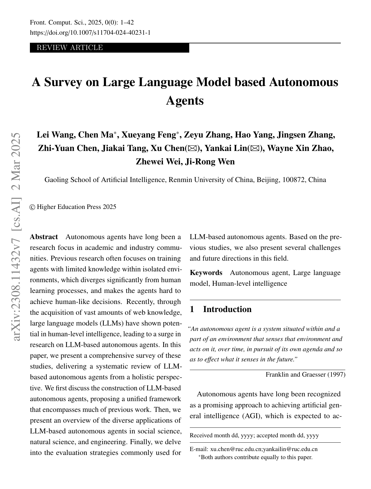
1 引言
“自主智能体是一个位于环境之中、也是环境组成部分的系统；它感知环境，并随着时间推移追求自身目标，通过行动影响它在未来所感知到的环境。”
—— Franklin 与 Graesser（1997）
自主智能体长期以来都被视为实现人工通用智能（AGI）的一条有前景的路径。人们期待这类智能体通过自主规划和行动完成任务。在早期研究中，智能体通常被假定依据简单的启发式策略函数行动，并在隔离、受限的环境中学习 [1–6]。这些假设与人类的学习过程有很大差异：人类心智高度复杂，个体可以从更加多样的环境中学习。因此，早期研究得到的智能体通常距离复现人类水平的决策过程还很远，尤其是在没有明确约束的开放领域环境中。
近年来，大型语言模型取得了显著成功，展现出实现类人智能的巨大潜力 [5–10]。这种能力来自全面的训练数据，以及相当多的模型参数。在此基础上，一个新的研究方向逐渐形成：把大型语言模型作为中央控制器，构建具有人类式决策能力的自主智能体 [11–17]。
与强化学习相比，基于大型语言模型的智能体拥有更全面的内部世界知识，即使没有在特定领域数据上训练，也能够作出有信息依据的行动。此外，这类智能体可以为人类交互提供自然语言接口，因而更加灵活，也更容易解释。
沿着这一方向，研究者提出了大量有前景的模型（总体发展趋势见图 1）。其核心思想，是赋予大型语言模型记忆、规划等人类能力，使其表现得更像人类，并有效完成各种任务。过去，这些模型往往彼此独立地提出，很少有工作从整体上进行总结和比较。然而，对这个快速发展的领域进行系统梳理，对于形成全面理解并启发后续研究都十分重要。
本文对基于大型语言模型的自主智能体领域进行全面综述，围绕三个关键方面组织内容：智能体构建、智能体应用和智能体评估。在智能体构建方面，本文关注两个问题：
- 如何设计智能体架构，使其更好地利用大型语言模型；
- 如何激发并增强智能体完成不同任务的能力。
直观地说，第一个问题旨在构建智能体的“硬件基础”，第二个问题则关注为智能体提供“软件资源”。对于第一个问题，本文提出一个可以涵盖大多数既有研究的统一智能体框架；对于第二个问题，本文总结智能体获取能力时常用的策略。除智能体构建外，本文还系统概述基于大型语言模型的自主智能体在社会科学、自然科学和工程领域中的应用。最后，本文讨论评估这类智能体的策略，重点覆盖主观评估和客观评估。
总的来说，本文对新兴的基于大型语言模型的自主智能体领域进行了系统回顾，并为已有研究建立了全面的分类体系。讨论重点包括智能体的构建、应用和评估方法三个方面。通过汇总大量既有研究，本文识别出该领域的多项挑战，并讨论潜在的未来方向。我们希望本综述能为刚进入该领域的研究者提供完整的背景知识，也能推动更多突破性研究。
图 1： 基于大型语言模型的自主智能体领域的发展趋势。图中统计 2021 年 1 月至 2023 年 8 月发表论文的累积数量，并用不同颜色表示不同智能体类别。例如，游戏智能体旨在模拟游戏玩家，工具智能体主要关注工具使用；每个时间段还列出若干具有代表性的不同类别研究。
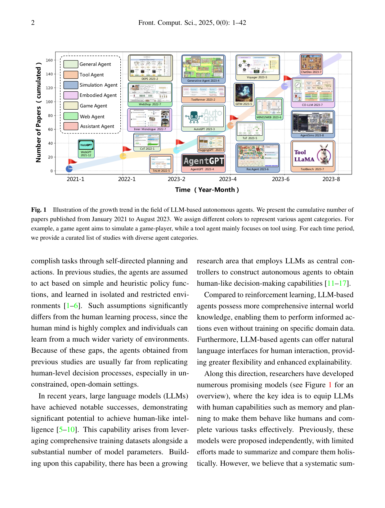
2 基于大型语言模型的自主智能体构建
基于大型语言模型的自主智能体希望利用大型语言模型的类人能力，有效执行多种任务。为实现这一目标，需要考虑两个重要方面：第一，应当设计什么样的架构，才能更好地使用大型语言模型；第二，在架构确定之后，如何让智能体获得完成特定任务所需的能力。针对架构设计，本文系统综合已有研究，形成一个统一框架；针对能力获取，本文按照是否对大型语言模型进行微调来总结相关策略。
如果把基于大型语言模型的自主智能体与传统机器学习进行类比，架构设计类似于定义网络结构，而能力获取则类似于学习网络参数。下面分别详细讨论这两个方面。
2.1 智能体架构设计
大型语言模型的最新进展表明，它们能够以问答形式完成范围广泛的任务。但构建自主智能体远不止问答：智能体需要承担特定角色，还要像人类一样自主感知环境、从环境中学习并不断发展。为了弥合传统大型语言模型与自主智能体之间的差距，一个关键问题是设计合理的智能体架构，帮助大型语言模型最大化发挥能力。已有工作已经开发出许多增强大型语言模型的模块，本节提出一个统一框架概括这些模块。
如图 2 所示，统一框架由画像模块、记忆模块、规划模块和行动模块组成。画像模块用于确定智能体的角色；记忆模块和规划模块把智能体置于动态环境中，使它能够回忆过去的行为并规划未来的行动；行动模块负责把智能体的决策转化为具体输出。在这些模块之间，画像模块会影响记忆模块和规划模块，而这三个模块共同影响行动模块。下文逐一介绍这些模块。
图 2： 基于大型语言模型的自主智能体架构统一框架。
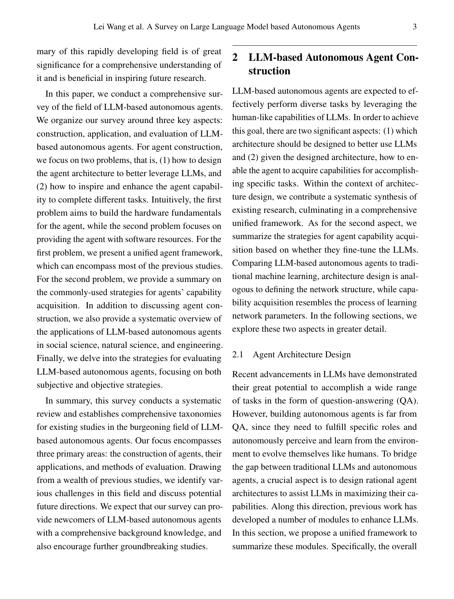
2.1.1 画像模块
自主智能体通常通过承担特定角色来执行任务，例如程序员、教师和领域专家 [18, 19]。画像模块用于描述智能体的角色画像，这些信息通常会写入提示词，从而影响大型语言模型的行为。智能体画像通常包含年龄、性别和职业等基本信息 [20]，也可以包含反映智能体个性的心理信息，以及描述智能体之间关系的社会信息 [21]。应当选择哪些画像信息，很大程度上取决于具体应用场景。例如，如果应用目标是研究人类认知过程，心理信息就尤其重要。确定画像信息的类型之后，下一个重要问题是如何为智能体创建具体画像。现有文献通常采用以下三种策略。
手工构建方法。 这种方法由人工直接指定智能体画像。例如，希望设计具有不同个性的智能体时，可以使用“你是一个外向的人”或“你是一个内向的人”来描述画像。许多早期工作都用手工方式指定智能体画像。生成式智能体 [22] 使用姓名、目标以及与其他智能体的关系等信息描述智能体；MetaGPT [23]、ChatDev [18] 和自协作方法 [24] 预先定义软件开发中的多种角色及其职责，再为每个智能体手动分配不同画像，以促进协作。PTLLM [25] 试图探索并量化大型语言模型生成文本中呈现的人格特征，它利用 IPIP-NEO [26]、BFI [27] 等人格测评工具手动定义不同智能体角色，引导大型语言模型生成多样化回答。[28] 通过把大型语言模型手动设定为政治家、记者和商人等角色，研究其输出的毒性。
总体而言，手工构建方法非常灵活，可以向智能体分配任意画像信息。但当智能体数量较多时，逐个构建画像会消耗大量人力。
大型语言模型生成方法。 这种方法利用大型语言模型自动生成智能体画像。通常，首先要说明画像生成规则，解释目标人群中画像的构成和属性；然后可以选择性地指定若干个种子画像，作为少样本示例；最后利用大型语言模型生成全部智能体画像。例如，RecAgent [21] 先手动构建少数智能体的种子画像，为它们设置年龄、性别、个性特征和电影偏好等属性，再利用 ChatGPT 根据这些种子信息生成更多画像。这种方法显著减少了构建画像所需的时间和工作量，尤其适合大规模人群。但它对生成结果缺乏精确控制，生成的画像可能不一致，或者偏离预期特征。
数据集对齐方法。 这种方法从真实世界数据集中获取智能体画像。典型做法是，先把数据集中关于真实人物的信息组织成自然语言提示，再利用这些信息描述智能体。例如，[29] 根据美国全国选举研究参与者的种族或族裔、性别、年龄和居住州等人口统计背景，为 GPT-3 分配角色，并考察 GPT-3 能否产生与真实人类相似的结果。数据集对齐方法能够准确捕捉真实人群的属性，因此生成的智能体行为更有意义，也更能反映真实世界场景。
需要注意的是，虽然大多数既有工作独立使用上述画像生成策略，但将它们结合起来可能带来额外收益。例如，为了通过智能体模拟预测社会发展，可以先利用真实世界数据集为一部分智能体构建画像，使其准确反映当前社会状态；然后再为现实中尚不存在、但未来可能出现的角色手工分配画像，从而预测未来社会发展。除这个例子外，也可以灵活组合其他策略。画像模块是智能体设计的基础，会显著影响其记忆、规划和行动过程。
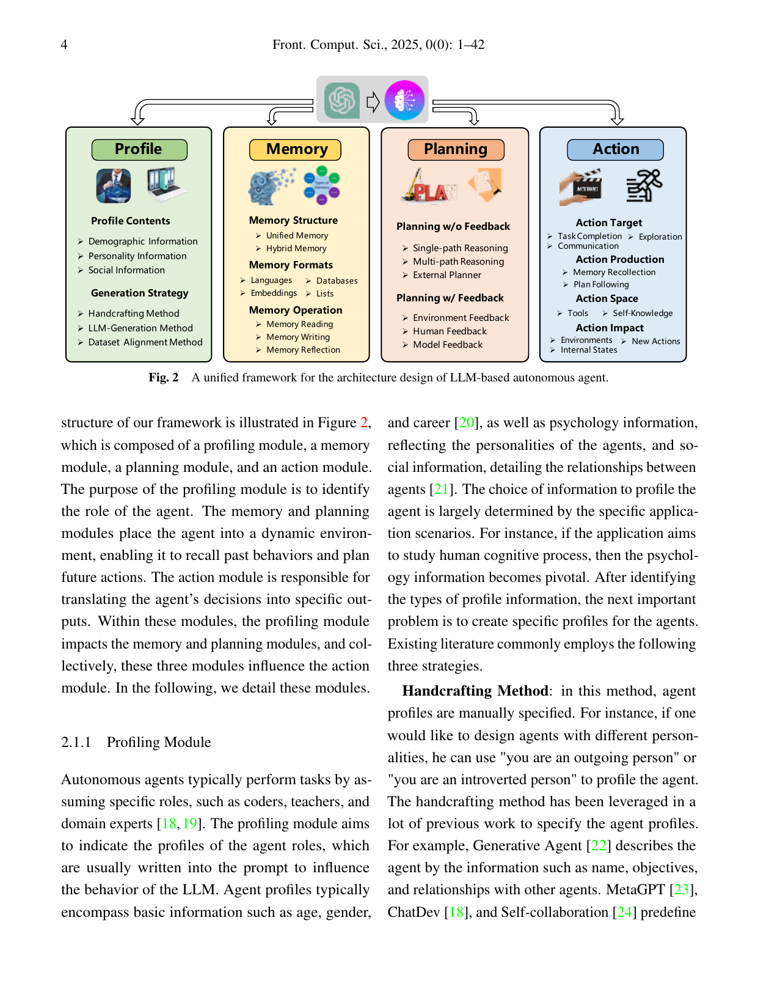
2.1.2 记忆模块
记忆模块在智能体架构设计中发挥重要作用。它保存智能体从环境中感知到的信息，并利用记录的记忆辅助未来行动。记忆模块可以帮助智能体积累经验、自我演化，以更一致、更合理、更有效的方式行动。本节从记忆结构、记忆格式和记忆操作三个方面全面介绍记忆模块。
记忆结构。 基于大型语言模型的自主智能体通常借鉴认知科学关于人类记忆过程的研究。人类记忆大致经历这样的过程：感觉记忆登记感知输入，短期记忆暂时保存信息，长期记忆则在较长时间内巩固信息。设计智能体记忆结构时，研究者也会从这些人类记忆特征中获得启发。具体来说，短期记忆类似于受 Transformer 架构上下文窗口限制的输入信息，长期记忆则类似于可以按需快速查询和检索的外部向量存储。下面介绍基于短期记忆和长期记忆的两种常见结构。
- 统一记忆。 这种结构只模拟人类短期记忆，通常通过上下文学习实现，记忆信息直接写入提示词。例如，RLP [30] 是一种对话智能体，它为说话者和听话者维护内部状态；每轮对话中，这些状态都作为大型语言模型提示词，发挥短期记忆的作用。SayPlan [31] 是专门用于任务规划的具身智能体，其中场景图和环境反馈构成短期记忆，引导智能体行动。CALYPSO [32] 用于《龙与地下城》游戏，可以帮助地下城主创作和讲述故事，其短期记忆由场景描述、怪物信息和先前摘要组成。DEPS [33] 也是一种游戏智能体，为 Minecraft 设计：它先生成任务计划，再用计划提示大型语言模型，由模型生成具体行动；这些计划可以视作智能体的短期记忆。
实际上，实现短期记忆相对简单，而且能够增强智能体感知近期行为和上下文敏感行为的能力。但大型语言模型的上下文窗口有限，难以把完整记忆都放进提示词，这会损害智能体性能。因此，需要更大的上下文窗口以及处理长文本的能力。许多研究者由此转向混合记忆系统。
- 混合记忆。 这种结构显式地模拟人类短期记忆和长期记忆。短期记忆暂时缓存近期感知，长期记忆则随时间巩固重要信息。例如，生成式智能体 [20] 使用混合记忆结构支持智能体行为：短期记忆包含智能体当前处境的上下文信息，长期记忆保存智能体过去的行为和思想，并根据当前事件检索相关内容。AgentSims [34] 也实现了混合记忆架构，提示词中的信息可以看作短期记忆；为增强存储能力，作者提出使用向量数据库的长期记忆系统。智能体每天的记忆被编码为嵌入并存入向量数据库，需要回忆过去时，长期记忆系统通过嵌入相似度检索相关信息。
在 GITM [16] 中，短期记忆保存当前轨迹，长期记忆保存从成功的历史轨迹中总结出的参考计划。长期记忆提供稳定知识，短期记忆则支持灵活规划。Reflexion [12] 使用短期滑动窗口捕获近期反馈，并用持久化长期存储保留浓缩后的洞见，使智能体同时利用详细的即时经验和高层抽象。SCM [35] 选择性激活最相关的长期知识，与短期记忆结合，对复杂上下文对话进行推理。SimplyRetrieve [36] 把用户查询作为短期记忆，并通过私有知识库保存长期记忆，在提升模型准确率的同时保护用户隐私。MemorySandbox [37] 使用长期和短期记忆保存不同对象，这些对象可以在多轮对话中访问；用户可以在同一画布上创建与不同智能体的多段对话，并通过拖放界面共享记忆对象。
在复杂环境中完成任务时，整合短期记忆和长期记忆通常能够增强智能体的长程推理能力，以及积累有价值经验的能力。
记忆格式。 除记忆结构外，还可以按照存储介质分析记忆模块，例如自然语言记忆或嵌入记忆。不同记忆格式有不同优势，适用于不同应用。
- 自然语言。 记忆信息（例如智能体行为和观察）直接用原始自然语言描述。这种格式灵活、易懂，能够保留丰富的语义信息，为引导智能体行为提供完整信号。Reflexion [12] 在滑动窗口中用自然语言保存经验反馈；Voyager [38] 用自然语言描述 Minecraft 游戏中的技能，并直接把这些描述存入记忆。
- 嵌入。 记忆信息被编码为嵌入向量，从而提高检索和读取效率。例如，MemoryBank [39] 把每个记忆片段编码为嵌入向量，并使用双塔稠密检索模型高效检索历史对话中的相关信息。
- 数据库。 记忆信息存储在数据库中，使智能体能够高效、全面地操作记忆。例如，ChatDB [40] 使用数据库作为符号记忆模块，智能体可以利用 SQL 语句精确添加、删除和修改记忆信息。
- 结构化列表。 记忆信息组织成列表，以高效、简洁的方式表达语义。例如，GITM [16] 在层次树结构中保存子目标的行动列表，显式捕捉目标与对应计划之间的关系；RET-LLM [41] 先把自然语言句子转换为三元组短语，再将其存入记忆。
这里只列出若干有代表性的记忆格式，实际还有很多未覆盖的格式，例如 Voyager [38] 使用的程序代码。不同格式并非互斥，许多模型会同时采用多种格式以发挥各自优势。GITM 的记忆模块就是一个例子：它采用键值列表结构，键由嵌入向量表示，值则是原始自然语言。嵌入向量可以高效检索记忆记录，自然语言则使记忆内容更加完整，从而帮助智能体作出更有依据的行动。
上面主要讨论了记忆模块的内部设计。下面转向用于与外部环境交互的记忆操作。
记忆操作。 记忆模块让智能体能够通过与环境互动获取、积累并利用重要知识。智能体与环境之间的交互通过三种关键记忆操作完成：记忆读取、记忆写入和记忆反思。
- 记忆读取。 记忆读取的目标，是从记忆中提取有意义的信息，以增强智能体行动，例如利用过去成功的行动完成相似目标 [16]。关键问题是如何从历史行动中提取有价值的信息。通常使用三个标准：新近性、相关性和重要性 [20]。越新、越相关、越重要的记忆，越可能被提取。根据已有研究，可以把记忆提取写成：
其中，$q$ 是查询，例如智能体需要解决的任务或智能体所处的上下文；$M$ 是全部记忆的集合；$s^{rec}(\cdot)$、$s^{rel}(\cdot)$ 和 $s^{imp}(\cdot)$ 分别是衡量记忆新近性、相关性和重要性的评分函数，分数越高分别表示记忆越新、越相关和越重要。这些评分函数可以用多种方式实现，例如，$s^{rel}(q,m)$ 可以通过查询和记忆嵌入之间的向量相似度计算。需要注意，$s^{imp}$ 只反映记忆本身的特征，与查询 $q$ 无关。$\alpha$、$\beta$ 和 $\gamma$ 是平衡参数，通过设置不同数值可以得到不同的记忆读取策略。当 $\alpha=\gamma=0$ 时，许多工作 [41, 16, 38, 30] 只考虑相关性分数；当 $\alpha=\beta=\gamma=1.0$ 时，生成式智能体 [20] 对三个指标赋予相同权重。
- 记忆写入。 记忆写入的目标，是把从环境感知到的信息保存到记忆中。保存有价值的信息，为以后检索信息丰富的记忆奠定基础，使智能体能够更高效、更合理地行动。写入时需要重点处理两个问题：如何存储与已有记忆相似的信息（记忆重复），以及当记忆达到存储上限时如何删除信息（记忆溢出）。
- 记忆重复。 为合并相似信息，研究者提出了整合新记录与旧记录的多种方法。例如，GITM [16] 把同一子目标对应的成功行动序列存入列表；当列表大小达到 $N=5$ 时，利用大型语言模型把所有序列压缩为一个统一计划，并用新计划替换原始序列。增强型大型语言模型 [42] 通过累计计数聚合重复信息，避免重复存储。
- 记忆溢出。 当记忆已满时，需要删除已有信息才能继续记忆。例如，ChatDB [40] 可以根据用户命令显式删除记忆；RET-LLM [41] 使用固定大小的记忆缓冲区，以先进先出（FIFO）方式覆盖最早的条目。
- 记忆反思。 记忆反思模拟人类观察和评价自身认知、情绪及行为过程的能力。应用于智能体时，它的目标是使智能体能够独立总结并推断更加抽象、复杂和高层次的信息。生成式智能体 [20] 可以把记忆中保存的过去经验总结为更广泛、更抽象的洞见：智能体先根据近期记忆生成三个关键问题，再用这些问题查询记忆获取相关信息，最后生成五条体现高层思想的洞见。例如，低层记忆“克劳斯·穆勒正在撰写研究论文”“克劳斯·穆勒正在与图书管理员交流以推进研究”“克劳斯·穆勒正在与艾莎·汗讨论研究”，可以诱导出高层洞见“克劳斯·穆勒专注于研究”。反思过程还可以分层进行，即基于已有洞见进一步生成更高层洞见。GITM [16] 把成功完成子目标的行动保存在列表中，当列表超过五个元素时，就把它们概括成共同的抽象模式并替换原有元素。ExpeL [43] 提出两种获得反思的方式：一是在同一任务中比较成功或失败的轨迹，二是从一组成功轨迹中学习经验。
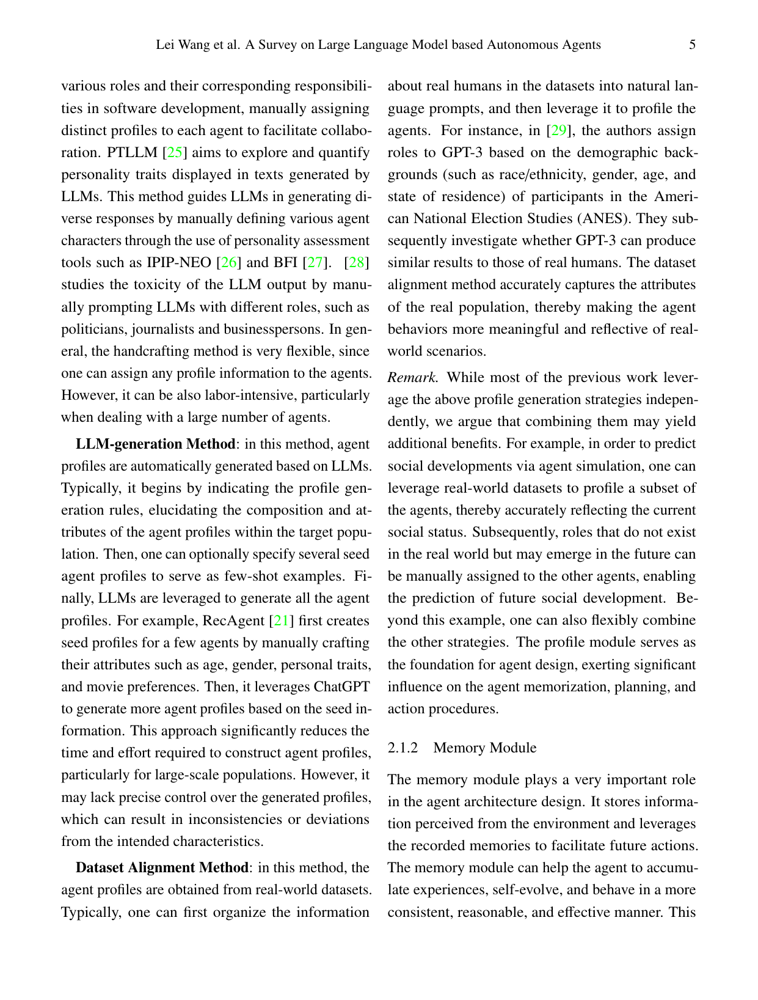
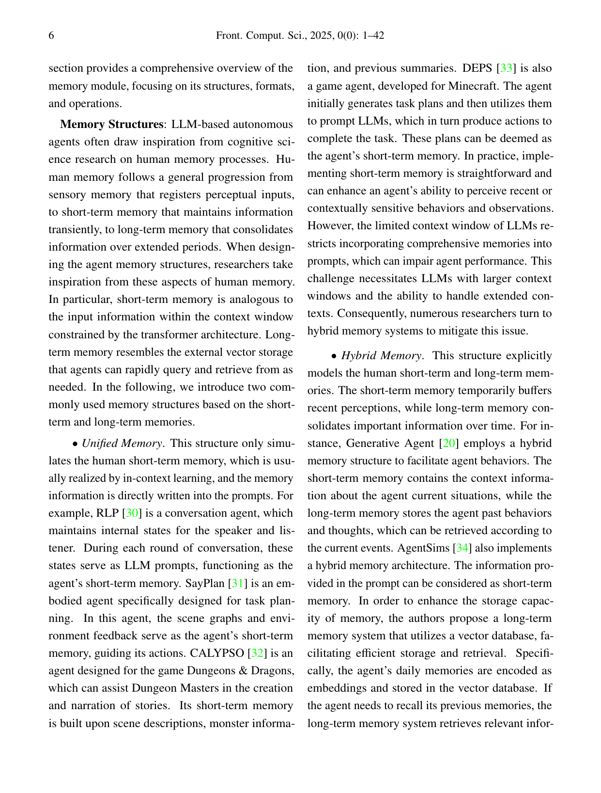
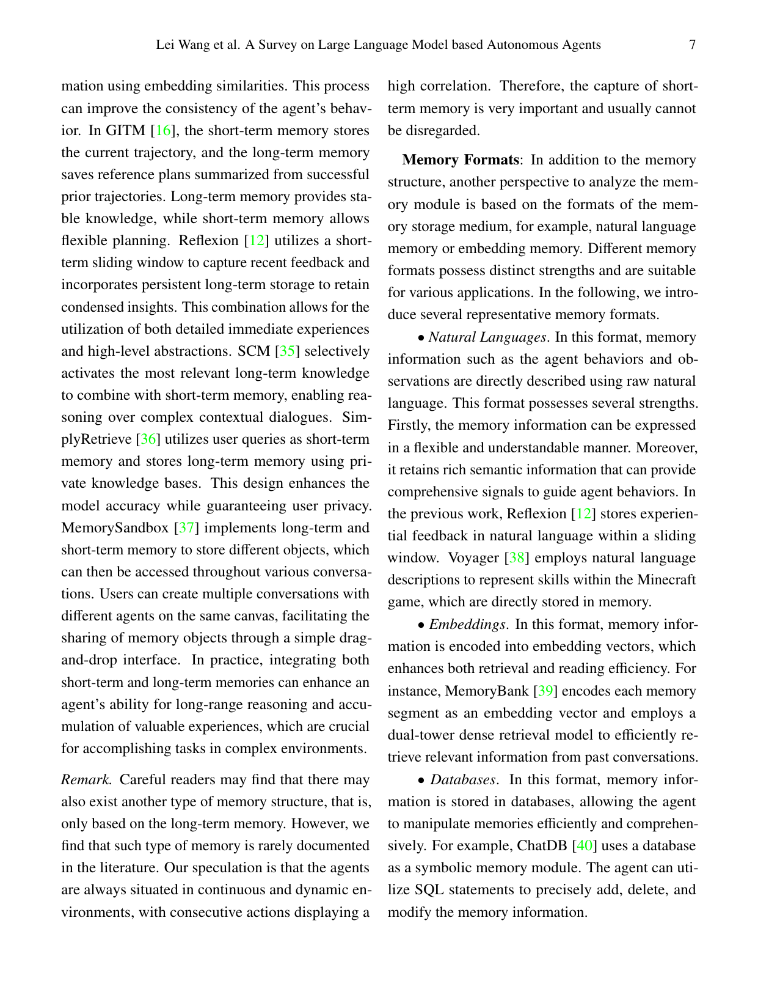
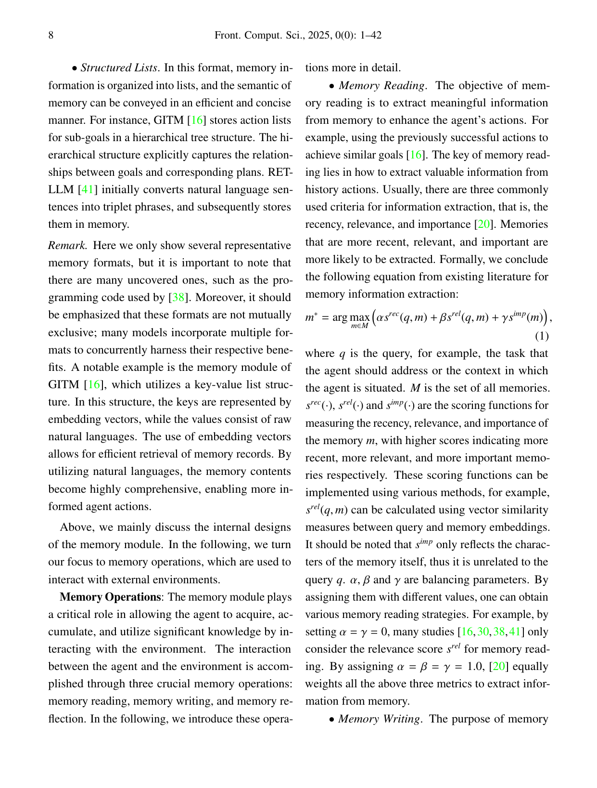
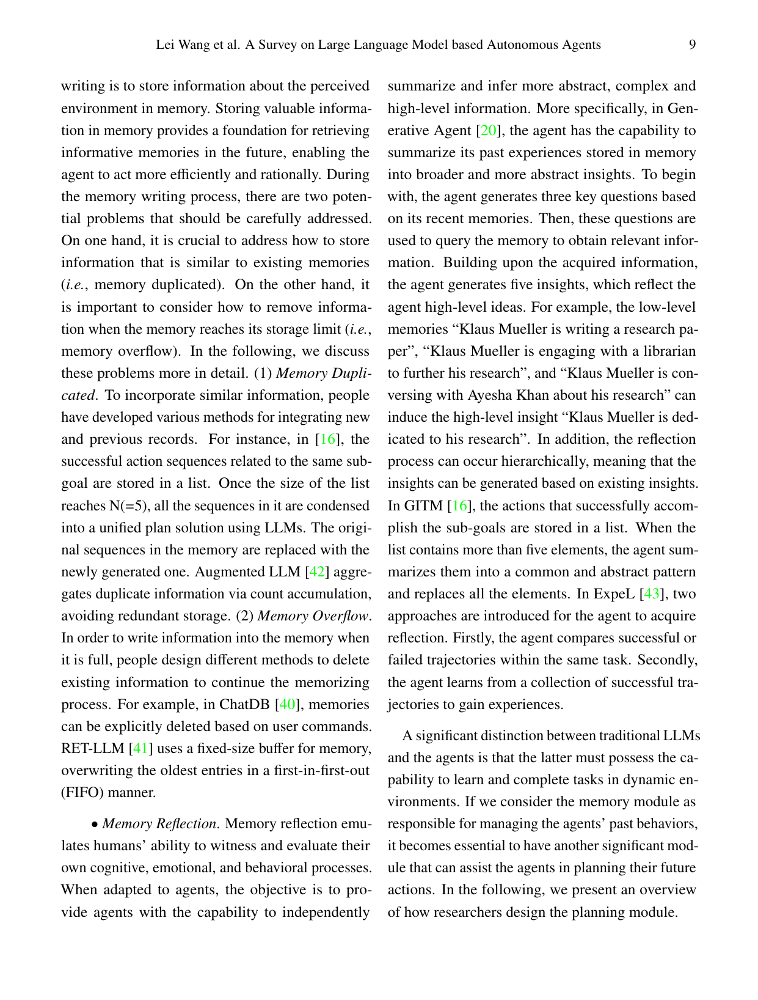
2.1.3 规划模块
面对复杂任务时，人类往往把任务拆解为更简单的子任务，分别解决。规划模块旨在赋予智能体这种人类能力，使智能体的行为更加合理、强大和可靠。本文根据智能体在规划过程中能否接收反馈，对已有研究进行总结。
无反馈规划。 这种方法中，智能体采取行动后不会获得能够影响未来行为的反馈。主要策略如下。
-
单路径推理。 最终任务被分解为若干中间步骤，这些步骤以级联方式连接，每一步只导向一个后续步骤，大型语言模型依次执行这些步骤以实现最终目标。思维链（CoT）[45] 把解决复杂问题的推理步骤放入提示词中，作为示例，启发大型语言模型逐步规划并行动。零样本思维链 [46] 则用“让我们一步一步思考”等触发句，引导大型语言模型生成任务推理过程，不在提示词中提供推理步骤示例。RePrompting [47] 在生成计划的每一步之前检查必要前提是否满足；如果不满足，就加入前提错误信息，并要求大型语言模型重新生成计划。ReWOO [48] 把计划与外部观察分离：智能体先独立生成计划和获取观察，再把二者结合得到最终结果。HuggingGPT [13] 先把任务分解为多个子目标，再借助 Hugging Face 中的模型逐个解决。CoT 与零样本 CoT 一次性生成所有推理步骤，而 ReWOO 与 HuggingGPT 会多次访问大型语言模型。SWIFTSAGE [49] 受人类认知双过程理论 [50] 启发，把 SWIFT 和 SAGE 两个模块结合用于复杂交互任务规划：SWIFT 根据已学习的模式快速响应，SAGE 使用大型语言模型提出关键问题并生成行动序列，进行深入规划。
-
多路径推理。 生成最终计划的推理步骤组织成树状结构，每个中间步骤都可能有多个后续步骤。这类似于人类思考，因为人在每个推理步骤都可能作出多种选择。自洽思维链（CoT-SC）[51] 认为复杂问题通常有多条思考路径可以推导最终答案，因此先用 CoT 生成多条推理路径及答案，再选择出现频率最高的答案。思维树（ToT）[52] 用树状推理结构生成计划，树中每个节点表示一个“思想”，即一个中间推理步骤；大型语言模型对中间步骤进行评估，再用广度优先搜索或深度优先搜索生成最终计划。与一次性生成全部计划步骤的 CoT-SC 不同，ToT 会针对每个推理步骤查询大型语言模型。RecMind [53] 设计自我启发机制，把规划过程中被丢弃的历史信息也用于推导新的推理步骤。GoT [54] 把 ToT 的树状结构扩展为图结构，得到更强的提示策略。AoT [55] 把算法示例加入提示词，增强大型语言模型的推理过程，而且只需查询一次或少数几次。在 [44] 中，大型语言模型被用作零样本规划器；每个规划步骤先生成多个可能的下一步，再根据这些步骤与可接受行动之间的距离决定最终行动。[56] 在 [44] 基础上加入与查询相似的示例。RAP [57] 构建世界模型，通过蒙特卡洛树搜索（MCTS）模拟不同计划的潜在收益，再聚合多轮 MCTS 迭代生成最终计划。
-
外部规划器。 尽管大型语言模型具备零样本规划能力，但针对领域特定问题有效生成计划仍然困难。因此，研究者会使用外部规划器。这些工具通常采用成熟、高效的搜索算法，可以快速找到正确甚至最优的计划。LLM+P [58] 先把任务描述转换为规划域定义语言（PDDL），再交给外部规划器处理，最后由大型语言模型把结果转换回自然语言。LLM-DP [59] 让大型语言模型把观察、当前世界状态和目标转换为 PDDL，再交给外部规划器高效确定最终行动序列。CO-LLM [22] 发现大型语言模型擅长生成高层计划，却不擅长低层控制，因此使用启发式设计的外部低层规划器，根据高层计划执行行动。
有反馈规划。 在许多真实场景中，智能体需要通过长时域规划解决复杂任务。无反馈规划可能效果较差：一方面，从一开始就生成完美计划非常困难，因为计划必须考虑各种复杂前提，简单遵循初始计划常常会失败；另一方面，执行过程中可能出现不可预测的状态转移，使最初计划无法执行。观察人类解决复杂任务的方式可以发现，人类会根据外部反馈反复制定和修改计划。因此，研究者设计了能够在行动后接收反馈的规划模块。反馈可以来自环境、人类或模型。
-
环境反馈。 反馈来自客观世界或虚拟环境，例如游戏任务完成信号，或智能体采取行动后的观察结果。ReAct [60] 用“思考—行动—观察”三元组构造提示词：思考负责高层推理和规划，行动表示具体行为，观察表示通过搜索引擎等外部反馈获得的行动结果；下一步思考会受到上一步观察影响，因而计划能适应环境。Voyager [38] 综合三类环境反馈：程序执行的中间进度、执行错误以及自我验证结果，帮助智能体为下一步行动制定更好计划。Ghost [16] 也把反馈纳入推理和行动过程。SayPlan [31] 利用场景图模拟器的环境反馈验证和改进战略规划；模拟器能够识别行动后的结果和状态转移，帮助智能体反复校准策略，直到找到可行计划。DEPS [33] 指出，仅提供任务是否完成的信息通常不足以纠正规划错误，因此进一步告知任务失败的具体原因。LLM-Planner [61] 提出有依据的重新规划算法，在任务执行时遇到对象不匹配或无法实现的计划，会动态更新大型语言模型生成的计划。内心独白 [62] 在行动后向智能体提供三类反馈：任务是否成功完成、被动场景描述和主动场景描述；前两类来自环境，使行动更加合理。
-
人类反馈。 除环境反馈外，直接与人类交互也是增强智能体规划能力的直观策略。人类反馈是主观信号，可以使智能体更好地对齐人类价值和偏好，也能缓解幻觉问题。内心独白 [62] 让智能体在三维视觉环境中执行高层自然语言指令，并主动向人类请求关于场景描述的反馈，再把反馈纳入提示词，以支持更有依据的规划和推理。环境反馈和人类反馈可以结合使用，例如内心独白同时收集两类反馈。
-
模型反馈。 除环境和人类这两类外部信号，研究者还探索利用智能体自身的内部反馈。自我改进机制 [63] 包含输出、反馈和改进三个环节：智能体先生成输出，再利用大型语言模型对输出提供反馈和修改建议，最后根据反馈改进输出，循环执行直到达到目标条件。SelfCheck [64] 让智能体检查并评估不同阶段生成的推理步骤，通过比较结果纠正错误。InterAct [65] 使用 ChatGPT、InstructGPT 等不同语言模型分别承担检查者和排序者等辅助角色，帮助主模型避免错误和低效行动。ChatCoT [66] 通过评估模块监视推理步骤，并用模型反馈提升推理质量。Reflexion [12] 通过详细的语言反馈增强规划能力：智能体先根据记忆产生行动，评价器再把智能体轨迹作为输入生成反馈。与以标量表示反馈的工作不同，Reflexion 使用更详细的语言反馈，为智能体计划提供更全面的支持。
总体而言，无反馈规划实现相对简单，但主要适合只需要少量推理步骤的简单任务；有反馈规划需要更谨慎地设计反馈处理机制，却更强大，能够有效处理涉及长程推理的复杂任务。
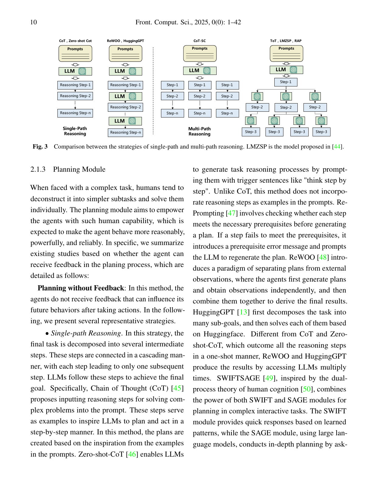
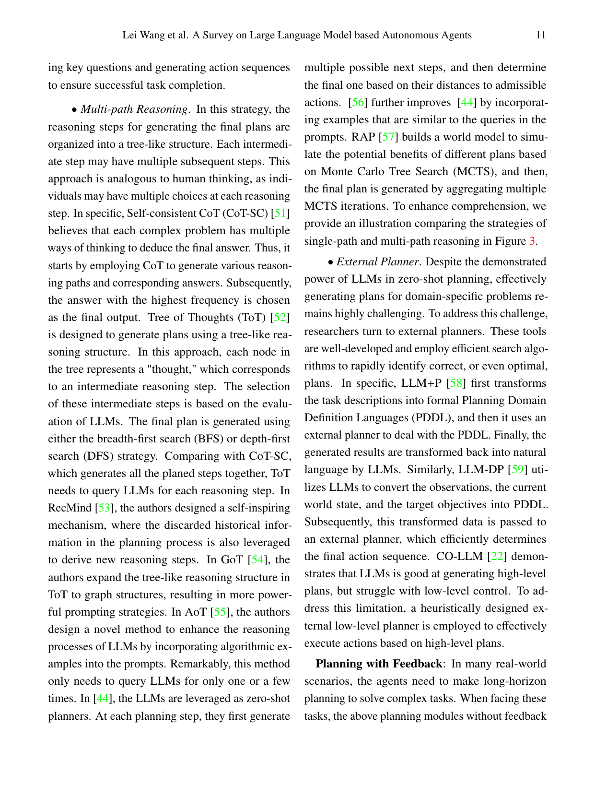
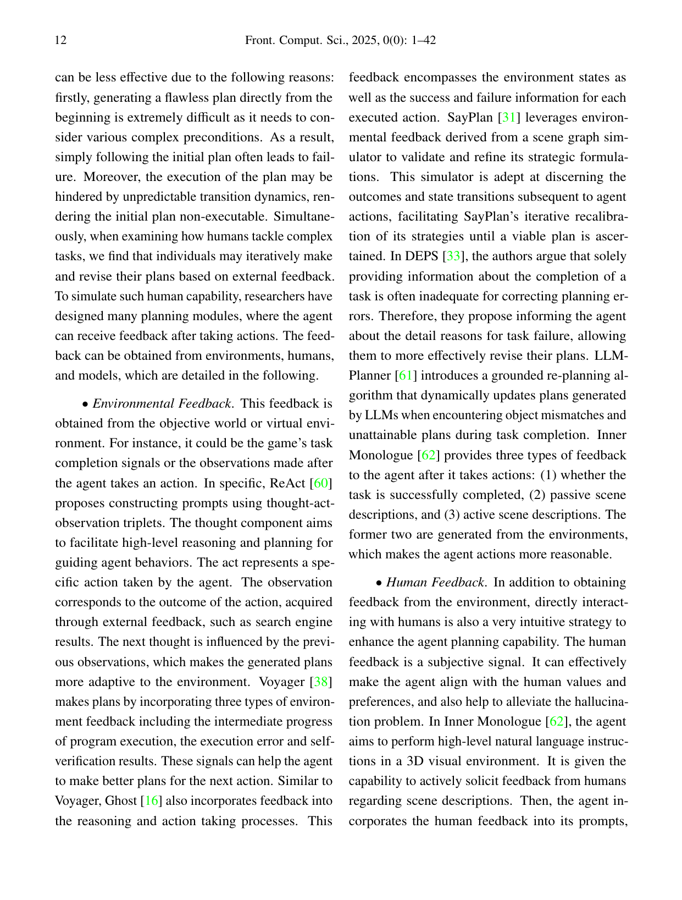
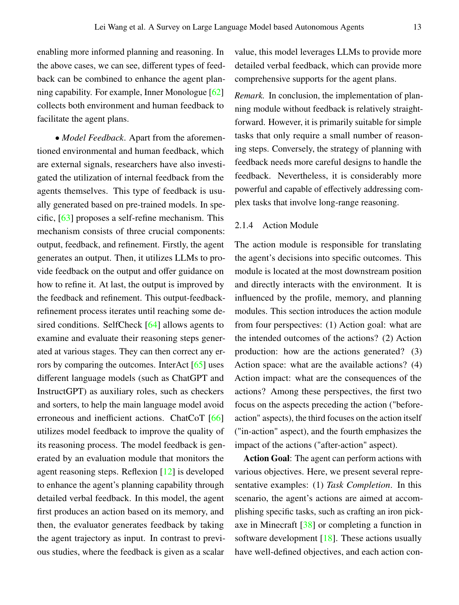
2.1.4 行动模块
行动模块负责把智能体决策转化为具体结果。它位于最下游，直接与环境交互，并受到画像、记忆和规划模块的影响。本节从四个角度介绍行动模块：行动目标，即行动希望达成什么结果；行动生成，即行动如何产生；行动空间，即可用行动有哪些；行动影响，即行动会带来什么后果。前两个角度关注行动之前的环节，第三个关注行动本身，第四个强调行动之后的影响。
行动目标。 智能体可以为各种目标采取行动，以下是几个有代表性的例子：
- 任务完成。 行动旨在完成具体任务，例如在 Minecraft 中制作铁镐 [38]，或在软件开发中完成某个函数 [18]。这类行动通常有明确目标，每个行动都为最终任务完成作出贡献，是现有研究中最常见的行动目标。
- 通信。 行动用于与其他智能体或真实人类交流信息、开展协作。例如，ChatDev [18] 中的智能体相互通信，共同完成软件开发任务；内心独白 [62] 中的智能体主动与人类交流，并根据人类反馈调整行动策略。
- 环境探索。 智能体探索陌生环境，以扩大感知范围，并在探索与利用之间取得平衡。例如，Voyager [38] 在完成任务的过程中探索未知技能，并根据环境反馈，通过试错持续改进技能执行代码。
行动生成。 普通大型语言模型的输入与输出直接相关，而智能体可以通过不同策略和信息来源采取行动。常见方式有两种：
- 基于记忆回忆的行动。 智能体根据当前任务从记忆中提取信息，再把任务和记忆作为提示词触发行动。生成式智能体 [20] 维护一条记忆流，每次行动前都提取最新、最相关和最重要的信息，以指导行动。GITM [16] 在完成低层子目标时查询记忆，寻找与任务有关的成功经验；如果过去完成过相似任务，就直接调用先前的成功行动。ChatDev [18] 和 MetaGPT [23] 等协作智能体会把对话历史保存在记忆中，因此生成的每一句话都会受到记忆影响。
- 遵循计划的行动。 智能体按照预先生成的计划行动。DEPS [33] 先为给定任务制定行动计划，如果没有出现计划失败信号，就严格遵循计划。GITM [16] 把任务分解成许多子目标，形成高层计划；随后按照计划依次采取行动，解决每个子目标并完成最终任务。
行动空间。 行动空间决定智能体可以采取哪些行动。根据是否使用外部工具，可以分为外部工具和大型语言模型内部知识两类。
-
外部工具。 虽然大型语言模型已经能够完成大量任务，但在需要完整专家知识的领域仍可能表现不佳，而且模型自身难以解决幻觉问题。为缓解这些问题，智能体可以调用外部工具执行行动。 1. 应用程序接口（API）。 这是近年来常见的扩展方式。HuggingGPT [13] 接入 Hugging Face 的庞大模型生态，以处理复杂用户任务；WebGPT [67] 在回答用户请求时自动生成查询，从外部网页提取相关内容；TPTU [68] 研究利用策略任务规划和基于 API 的工具完成复杂任务。Gorilla [69] 通过微调使大型语言模型能够准确生成 API 调用参数，有效降低调用外部 API 时的幻觉。Toolformer [15] 使用工具 API 演示进行训练，通过自监督学习决定何时以及如何调用外部工具。API-Bank [70] 提供含有多种 API 工具的综合基准，用于系统评估工具增强型大型语言模型，同时提供训练数据，增强模型集成工具的能力。ToolLLaMA [14] 提出覆盖数据收集、训练和评估的工具使用框架，微调后的模型能够熟练使用大量 API。RestGPT [71] 把大型语言模型与遵循通用网页服务开发标准的 RESTful API 连接起来，使生成的程序更适合真实世界应用。TaskMatrix.AI [72] 把大型语言模型接入庞大的 API 生态以支持任务执行，其核心是一个多模态对话基础模型：模型与用户交互、理解用户目标和上下文，再为特定任务生成可执行代码。总体而言，智能体把外部 API 作为通用工具，系统扩展行动空间，并通过整合多样化计算能力突破传统语言模型的固有限制。 2. 数据库和知识库。 外部数据库或知识库能为智能体提供领域信息，使行动更贴近现实。ChatDB [40] 使用 SQL 查询数据库；MRKL [73] 和 OpenAGI [74] 接入知识库、规划器等专家系统，获取领域特定信息。 3. 外部模型。 外部模型通常能处理比 API 更复杂的任务。ViperGPT [75] 先用 Codex 根据文本描述生成 Python 代码，再执行代码完成任务。ChemCrow [76] 是用于有机合成、药物发现和材料设计的化学智能体，利用 17 个专家设计模型辅助行动。MM-REACT [77] 集成 VideoBERT、X-Decoder、SpeechBERT 等模型，增强视频摘要、图像生成和音频处理等多模态能力。
-
内部知识。 一些智能体完全依靠大型语言模型自身的知识来指导行动，主要利用以下能力： 1. 规划能力。 既有研究表明，大型语言模型可以作为合格的规划器，把复杂任务分解为简单任务 [45]，甚至无需在提示词中提供示例就能触发这种能力 [46]。DEPS、GITM 和 Voyager 都依赖大型语言模型的规划能力完成复杂任务。 2. 对话能力。 大型语言模型通常能够生成高质量对话，使智能体表现得更像人类。ChatDev 中的不同智能体可以讨论软件开发过程并反思自身行为；RLP 中的智能体可以根据听话者对话语的潜在反馈进行交流。 3. 常识理解能力。 大型语言模型可以理解人类常识，因此智能体能够模拟日常生活并作出类人决策。生成式智能体能够理解当前状态和周围环境，并根据基本观察总结高层思想；RecAgent 和 S3 中的智能体也依赖这种能力模拟用户社会行为。
行动影响。 行动影响是智能体行动产生的后果，主要包括：
- 改变环境。 智能体可以移动位置、收集物品、建造建筑等，直接改变环境状态。在 GITM 和 Voyager 中，智能体收集资源（例如砍伐三块木头）后，资源会从环境中消失。
- 改变内部状态。 行动也可以改变智能体自身，例如更新记忆、形成新计划和获取新知识。生成式智能体在系统中完成行动后会更新记忆流；SayCan [79] 的行动会更新智能体对环境的理解。
- 触发新行动。 在任务完成过程中，一个行动常常会导致后续行动。例如，Voyager [38] 收集到必要资源后，就会触发建造建筑物的行动。
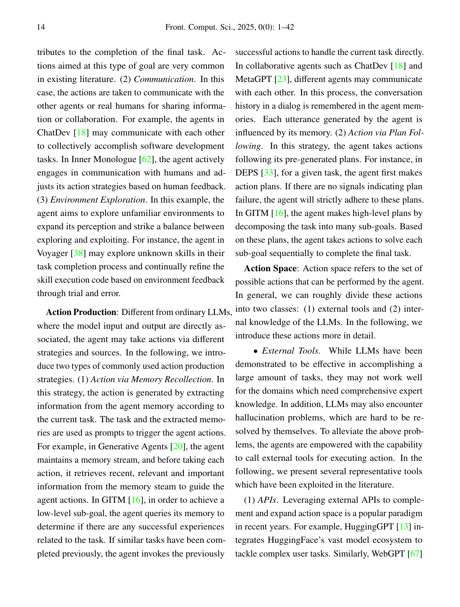
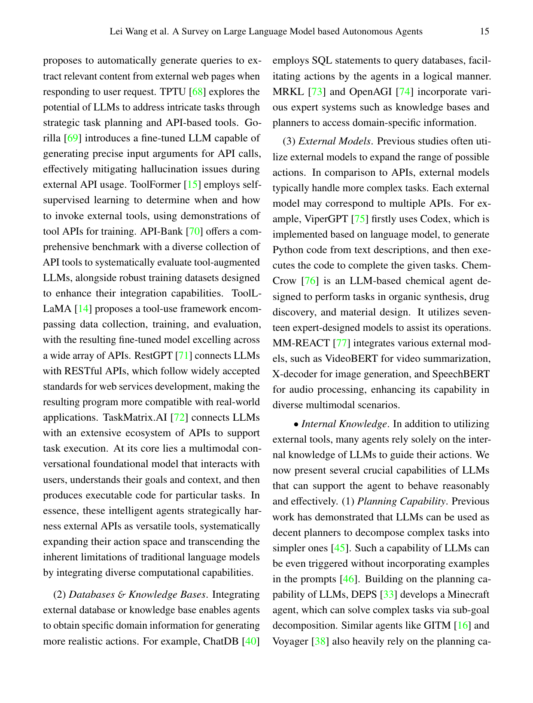
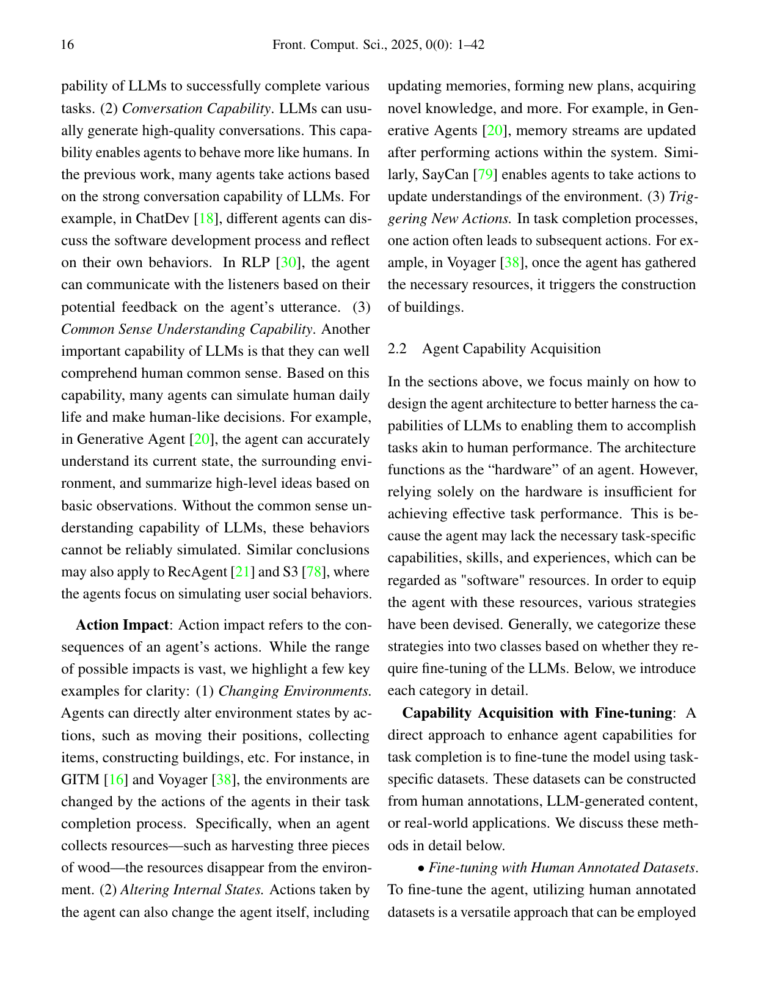
2.2 智能体能力获取
前文主要讨论如何设计智能体架构，以更好地利用大型语言模型的能力，使智能体能够像人类一样完成任务。架构相当于智能体的“硬件”，但仅靠硬件不足以取得有效任务表现，因为智能体还可能缺少完成特定任务所需的能力、技能和经验，这些可以看作“软件”资源。为智能体提供这些资源，研究者提出了多种策略。根据是否需要微调大型语言模型，可以把策略分为两类。
通过微调获取能力
增强智能体任务完成能力的一种直接方式，是使用任务特定数据集微调模型。这些数据集可以来自人工标注、大型语言模型生成的内容，或真实世界应用。
使用人工标注数据集微调。 这种方法适用于多种应用场景。研究者先设计标注任务，再招募人员完成标注。例如，CoH [85] 旨在让大型语言模型与人类价值和偏好对齐。与只用简单符号表示人类反馈的工作不同，CoH 把人类反馈转换为自然语言形式的详细比较信息，并直接用这种自然语言数据微调大型语言模型。RET-LLM [41] 为了更好地把自然语言转换成结构化记忆信息，使用人工构建的数据集微调大型语言模型，其中每个样本都是一对“三元组—自然语言”。
WebShop [86] 从 Amazon.com 收集 118 万件真实商品，构建模拟电子商务网站，并设计多种人类购物场景。作者招募 13 名工作人员，在网站上收集真实人类行为数据，最后基于这份数据训练启发式规则、模仿学习和强化学习三类方法。虽然该研究并没有微调基于大型语言模型的智能体，但作者认为，这份数据集在增强网页购物领域智能体能力方面具有巨大潜力。EduChat [87] 面向开放域问答、作文评估、苏格拉底式教学和情感支持等教育功能，使用涵盖多种教育场景与任务的人工标注数据集微调大型语言模型。
使用大型语言模型生成数据集微调。 构建人工标注数据集需要招募人员，大规模标注尤其昂贵。考虑到大型语言模型已经能在大量任务中展现类人能力，一个自然想法是让大型语言模型完成标注任务。此类数据集可能不如人工标注完美，但成本更低，也可以生成更多样本。ToolBench [14] 为增强开源大型语言模型的工具使用能力，从 RapidAPI Hub 收集 49 类、16,464 个真实世界 API，再提示 ChatGPT 生成覆盖单工具和多工具场景的多样指令，并用所得数据集微调 LLaMA，显著改善工具使用表现。
在 [83] 中，为赋予智能体社会能力，作者设计了一个沙盒环境，并部署多个智能体相互交互。面对一个社会问题，中央智能体先生成初始回答，再把回答分享给附近的智能体以收集反馈。中央智能体随后根据这些反馈及其详细解释修改初始回答，使回答更符合社会规范。整个过程积累了大量智能体社会交互数据，随后用于微调大型语言模型。
使用真实世界数据集微调。 除人工或大型语言模型标注外，直接使用真实世界数据集微调也是常见策略。MIND2WEB [88] 收集大量真实网页数据，覆盖 31 个领域、137 个真实网站上的 2,000 多个开放任务，以及多样的场景和完整的用户交互模式，再据此微调大型语言模型，使其执行电影发现、购票等网页任务。SQL-PaLM [89] 使用 Spider、BIRD 等跨领域大规模文本到 SQL 数据集微调 PaLM 2，在文本到 SQL 任务上取得显著性能提升。
不进行微调的能力获取
在传统机器学习时代，模型主要通过从数据集学习来获取能力，知识被编码进模型参数。在大型语言模型时代，既可以训练或微调模型参数，也可以设计精细提示词，即使用提示工程。提示工程需要把有价值的信息写入提示词，以增强模型能力，或释放大型语言模型已有的能力。进入智能体时代，能力获取进一步分为三种策略：模型微调、提示工程，以及设计合适的智能体演化机制。作者把第三种策略称为“机制工程”。机制工程是一个宽泛概念，包括开发专用模块、引入新的工作规则，以及用其他方法增强智能体能力。图 4 展示了模型能力获取策略从机器学习时代到大型语言模型时代、再到智能体时代的变化。
提示工程。 大型语言模型具有很强的语言理解能力，因此人们可以直接用自然语言与模型交互。由此产生了一种新的能力增强策略：用自然语言描述所需能力，再把描述作为提示词影响大型语言模型的行动。例如，思维链 [45] 为了赋予智能体复杂任务推理能力，把中间推理步骤作为少样本示例放进提示词；自洽思维链 [51] 和思维树 [52] 也使用相似技术。RLP [30] 通过在提示词中提供智能体对自身和听者心理状态的信念，增强对话中的自我意识，使话语更有吸引力、适应性更强；加入听者的目标心理状态，还能让智能体形成更具策略性的计划。Retroformer [90] 提出回溯模型，使智能体可以反思过去的失败；反思结果被整合进大型语言模型提示词，指导未来行动。该模型还使用强化学习迭代改进回溯模型，进而不断优化提示词。
机制工程。 与模型微调和提示工程不同，机制工程是智能体特有的能力增强策略。代表性方法如下。
- 试错。 智能体先执行行动，再调用预先定义的批评器判断行动。如果行动不令人满意，智能体就吸收批评器的反馈并重新行动。RAH [91] 中的智能体充当推荐系统用户助手，一个重要职责是模拟人类行为、代表用户生成回答。智能体先预测回答，再与真实人类反馈比较；若二者不同，批评器生成失败信息，并将其纳入下一次行动。DEPS [33] 先为任务制定计划，执行中若行动失败，解释器会给出具体失败原因，智能体据此重新设计计划。RoCo [92] 在多机器人协作任务中，先为每个机器人提出子任务计划和三维航点路径，再通过碰撞检测、逆运动学等环境检查验证；任一检查失败时，反馈都会追加到每个智能体的提示词中，并开始新一轮对话，直到所有计划和航点通过验证。PREFER [93] 延续这一思路，在智能体表现不佳时利用大型语言模型生成详细反馈，实现迭代改进。
- 众包。 [94] 设计辩论机制，利用群体智慧增强智能体能力。不同智能体先分别回答同一问题；如果回答不一致，就要求它们吸收其他智能体的解法并更新回答。这个过程持续到形成最终共识。每个智能体都通过理解和吸收其他智能体的观点得到增强。
- 经验积累。 GITM [16] 中的智能体起初不知道如何完成任务，它先探索环境；成功完成任务后，把所使用的行动保存到记忆中。以后遇到相似任务时，再提取相关记忆完成当前任务。能力提升来自专门设计的记忆积累和使用机制。Voyager [38] 引入技能库，其中各项技能的可执行代码通过环境交互不断改进，使任务执行效率随时间提高。AppAgent [95] 以类似人类用户的方式与应用程序交互，通过自主探索和观察人类演示进行学习，并建立知识库，作为在手机不同应用中执行复杂任务的参考。MemPrompt [96] 要求用户用自然语言反馈智能体解决问题的意图，并把反馈保存到记忆；遇到相似任务时，智能体检索相关记忆，生成更合适的回答。
- 自驱演化。 智能体通过自主学习和反馈机制自行改进。LMA3 [97] 让智能体自主设定目标，通过探索环境并接收奖励函数反馈逐步提升能力，从而依据自身偏好获取知识和发展能力。SALLM-MS [98] 把 GPT-4 等先进大型语言模型整合进多智能体系统；智能体可以适应并完成复杂任务，在与环境交互时展示高级通信能力，实现自驱演化。CLMTWA [99] 使用强大的大型语言模型充当教师、较弱的语言模型充当学生；教师通过心智理论生成并传达自然语言解释，提升学生的推理能力，还可以针对学生个性化解释，并根据干预的预期效用只在必要时介入。NLSOM [100] 利用智能体之间的自然语言协作，依据反馈动态调整角色、任务和关系，从而解决单一智能体能力范围以外的问题。
比较上述能力获取策略可以发现，微调通过调整模型参数来增强智能体能力，能够纳入大量任务特定知识，但只适用于开源大型语言模型。不微调的方法通常依靠精细提示策略或机制工程，可以用于开源和闭源模型；不过，受输入上下文窗口限制，它们不能容纳过多任务信息，而且提示词和机制的设计空间极大，很难找到最优方案。
前文已经从架构设计和能力获取两个方面详细介绍了基于大型语言模型的智能体构建。表 1 展示既有工作与上述分类之间的对应关系。为了保证完整性，表中还纳入了一些没有明确使用“大型语言模型智能体”这一说法、但与该领域高度相关的研究。
表 1 中，画像模块的①、②、③分别表示手工构建、大型语言模型生成和数据集对齐；记忆操作的①、②分别表示只有读写，以及同时具备读、写和反思；记忆结构的①、②分别表示统一记忆和混合记忆；规划模块的①、②分别表示无反馈规划和有反馈规划；行动模块的①、②分别表示不使用工具和使用工具；能力获取策略的①、②分别表示需要微调和不需要微调；“-”表示论文没有明确讨论相应内容。
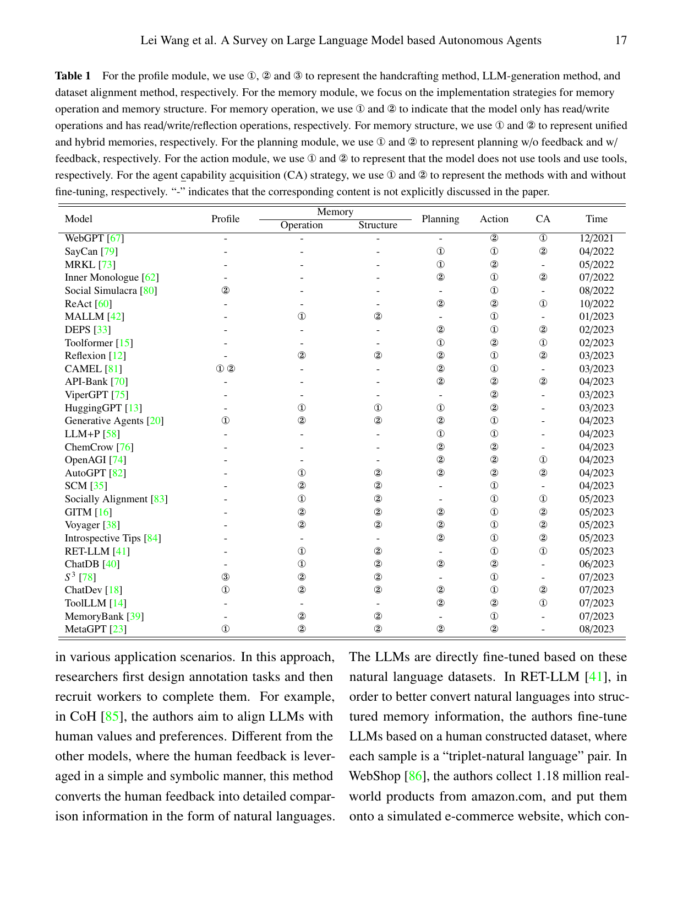
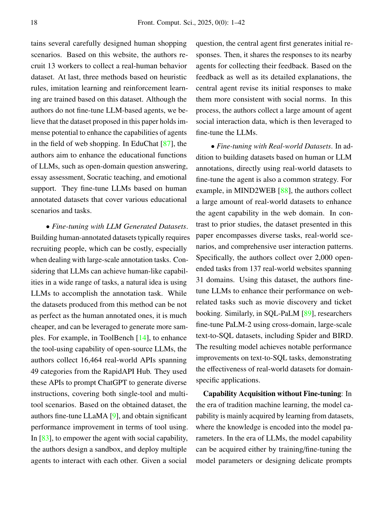
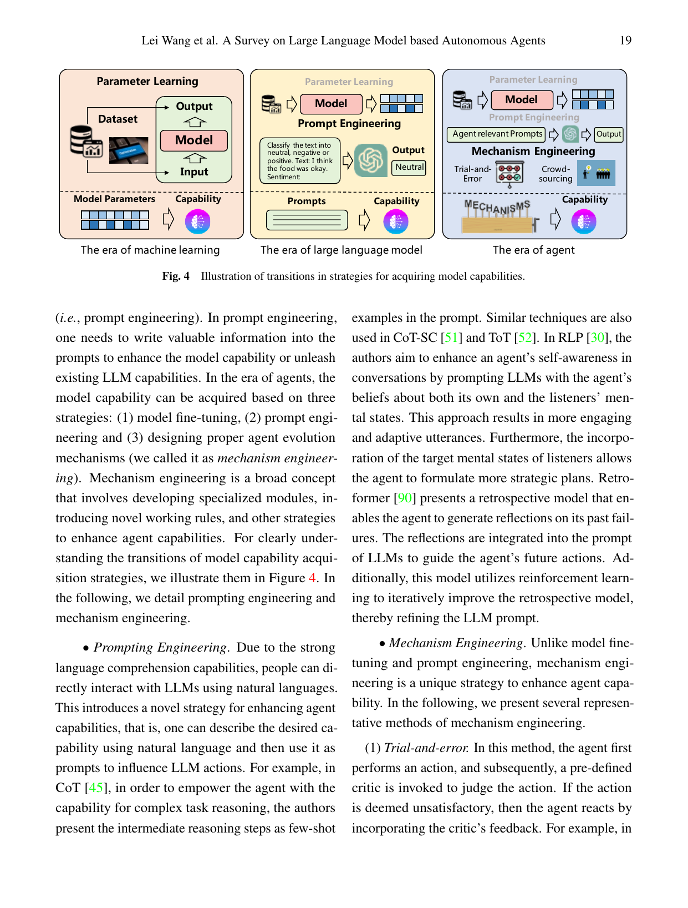
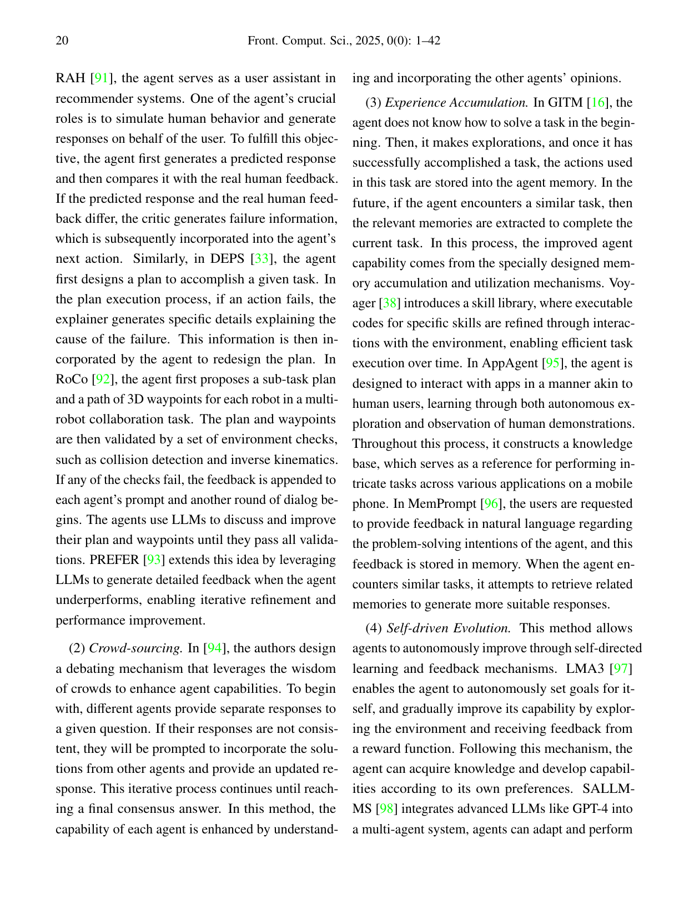
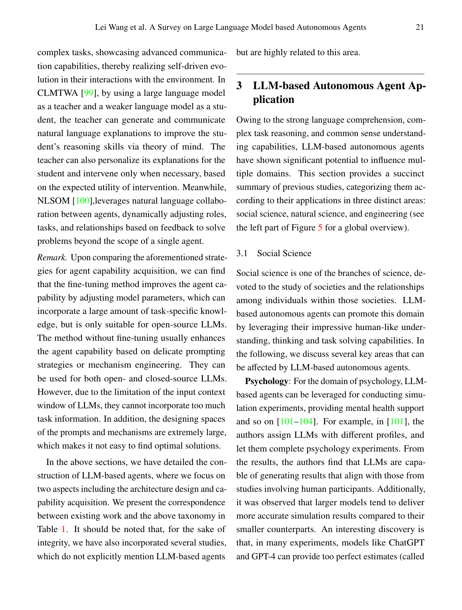
3 基于大型语言模型的自主智能体应用
大型语言模型具有很强的语言理解、复杂任务推理和常识理解能力，因此基于大型语言模型的自主智能体已经显示出影响多个领域的巨大潜力。本节简要总结既有研究，并按照应用将其分为社会科学、自然科学和工程三个领域。图 5 左侧给出了整体概览。
3.1 社会科学
社会科学研究社会，以及社会中个体之间的关系。基于大型语言模型的自主智能体拥有令人印象深刻的类人理解、思考和任务解决能力，可以推动这一领域。下面讨论几个可能受到这类智能体影响的关键方向。
心理学。 基于大型语言模型的智能体可以用于开展模拟实验、提供心理健康支持等 [101–104]。在 [101] 中，作者为大型语言模型分配不同画像，让它们完成心理学实验。结果表明，大型语言模型能够生成与人类参与者研究相一致的结果，而且较大模型通常比小模型提供更准确的模拟结果。一个有趣发现是，在许多实验中，ChatGPT 和 GPT-4 等模型会给出过于完美的估计，作者把这种现象称为“超精度失真”；它可能影响下游应用。[103] 系统分析基于大型语言模型的对话智能体在心理健康支持方面的有效性。作者从 Reddit 收集 120 篇帖子，发现这类智能体可以按需帮助用户应对焦虑、社会孤立和抑郁；但与此同时，智能体有时也会生成有害内容。
政治学与经济学。 基于大型语言模型的智能体也可以用于政治学和经济学研究 [29, 104, 105]。[29] 使用这类智能体识别意识形态并预测投票模式；[104] 借助智能体理解政治演讲的话语结构和说服性要素；[105] 则为智能体赋予才能、偏好和个性等特定特征，在模拟场景中探索人类经济行为。
社会模拟。 过去，以人类社会为对象开展实验通常成本很高、不合伦理，甚至不可行。随着大型语言模型蓬勃发展，许多研究者开始构建由大型语言模型智能体组成的虚拟环境，模拟有害信息传播等社会现象 [20, 34, 78, 80, 106–109]。Social Simulacra [80] 模拟在线社会社区，探索使用智能体模拟辅助决策者改进社区规则的潜力。[106, 107] 研究智能体不同行为特征在社交网络中的潜在影响。生成式智能体 [20] 和 AgentSims [34] 在虚拟小镇中构建多个智能体，模拟人类日常生活。SocialAI School [108] 用大型语言模型智能体模拟并研究儿童发展过程中的基本社会认知技能。S3 [78] 构建社会网络模拟器，重点研究信息、情绪和态度的传播。CGMI [110] 是多智能体模拟框架，它通过树结构维持智能体人格，并构建认知模型；作者使用 CGMI 模拟了课堂场景。
法学。 基于大型语言模型的智能体可以辅助法律决策，帮助形成信息依据更充分的判断 [111, 112]。Blind Judgement [112] 使用多个语言模型模拟多名法官的决策过程，收集不同意见，再通过投票机制汇总结果。ChatLaw [111] 是一个有代表性的中文大型语言模型法律模型，能够同时使用数据库检索和关键词检索，专门用于缓解此类模型常见的幻觉问题。它还使用自注意力机制，通过降低不准确参考资料的影响来增强模型能力。
研究辅助。 除专门领域外，基于大型语言模型的智能体也越来越多地充当通用社会科学研究助手 [104, 113]。[104] 中的智能体提供多方面协助，包括生成简洁的文章摘要、提取关键关键词，以及为研究编写详细脚本，展示了它们丰富并简化研究流程的能力。[113] 中的智能体充当写作助手，帮助社会科学家发现新的研究问题，为探索和创新开辟新方向。这些案例体现了智能体提升社会科学研究效率、创造力和广度的潜力。
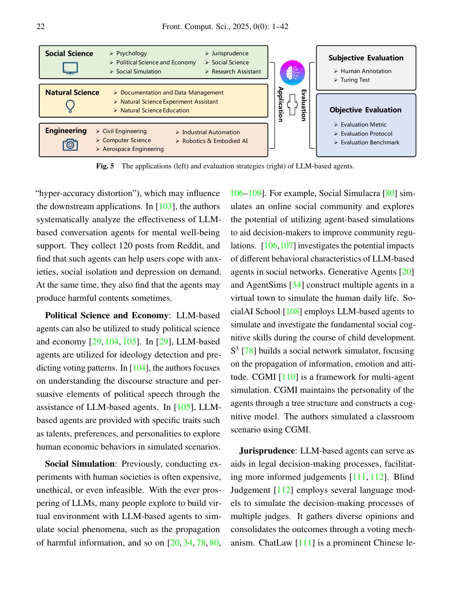
3.2 自然科学
自然科学以观察和实验得到的经验证据为基础，描述、理解并预测自然现象。随着大型语言模型快速发展，基于大型语言模型的智能体在自然科学中的应用越来越普遍。下面介绍几个能够发挥重要作用的代表性方向。
文档与数据管理。 自然科学研究经常需要收集、组织和综合大量文献，耗费许多时间和人力。基于大型语言模型的智能体具有很强的语言理解能力，还可以使用互联网和数据库等工具处理文本，因而擅长文档与数据管理。[114] 中的智能体能够高效查询并使用互联网信息，完成问答和实验规划等任务。ChatMOF [115] 使用大型语言模型从人类撰写的文本描述中提取重要信息，再制定计划，调用相关工具预测金属有机框架的性质和结构。ChemCrow [76] 使用化学数据库验证化合物表示是否准确，并识别潜在危险物质；这项功能通过保证数据准确性，提高科学研究的可靠性和完整性。
实验辅助。 基于大型语言模型的智能体能够独立开展实验，可以成为支持科学家研究项目的重要工具 [76, 114]。[114] 提出一个使用大型语言模型自动设计、规划和执行科学实验的智能体系统。系统接收实验目标后，访问互联网并检索相关文档以收集所需信息，随后使用 Python 代码完成必要计算并执行后续实验。ChemCrow [76] 集成 17 个专门开发的工具，辅助化学研究；收到目标后，它会提供实验步骤建议，同时强调拟议实验中的潜在安全风险。
自然科学教育。 基于大型语言模型的智能体能够流畅地与人类交流，因此经常用于开发教育工具。[114] 开发智能体教育系统，帮助学生学习实验设计、方法和分析；系统目标是提升学生的批判性思维和问题解决能力，同时促进对科学原理的深入理解。Math Agents [116] 可以帮助研究者探索、发现、解决和证明数学问题，还能与人类交流，帮助他们理解和使用数学。[117] 利用 Codex [118] 自动求解并解释大学水平数学题，可作为教授学生和研究者的教育工具。CodeHelp [119] 是编程教育智能体，能够设置课程特定关键词、监控学生提问并向系统反馈。EduChat [87] 专门面向教育领域，通过对话向教师、学生和家长提供个性化、公平且富有同理心的支持。FreeText [120] 使用大型语言模型自动评估学生对开放题的回答并给出反馈。
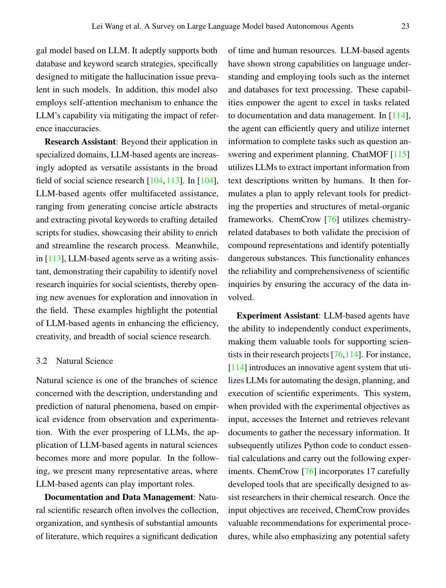
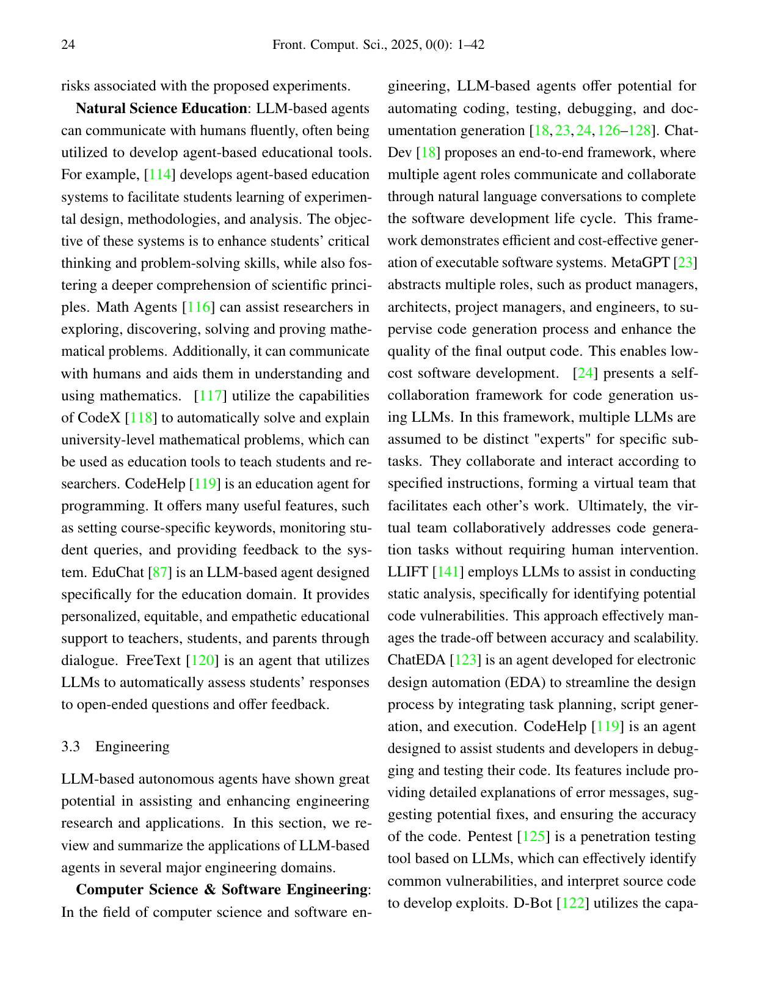
3.3 工程
基于大型语言模型的自主智能体已经显示出辅助并增强工程研究与应用的巨大潜力。本节回顾并总结它们在几个主要工程领域中的应用。
计算机科学与软件工程。 在计算机科学和软件工程领域，基于大型语言模型的智能体可以自动化编码、测试、调试和文档生成 [18, 23, 24, 126–128]。ChatDev [18] 提出端到端框架，让多个智能体角色通过自然语言对话进行交流与协作，共同完成整个软件开发生命周期；该框架能够高效、低成本地生成可执行软件系统。MetaGPT [23] 抽象出产品经理、架构师、项目经理和工程师等多个角色，监督代码生成过程并提高最终代码质量，从而实现低成本软件开发。自协作框架 [24] 把多个大型语言模型视为负责不同子任务的“专家”，按照指定指令协作和交互，组成互相促进工作的虚拟团队，最终在无需人类干预的情况下共同解决代码生成任务。
LLIFT [141] 使用大型语言模型辅助静态分析，专门识别潜在代码漏洞，并有效平衡准确性与可扩展性。ChatEDA [123] 是面向电子设计自动化的智能体，通过整合任务规划、脚本生成和执行来简化设计流程。CodeHelp [119] 帮助学生和开发者调试及测试代码，能够详细解释错误信息、提出潜在修复方案，并确保代码准确。PentestGPT [125] 是基于大型语言模型的渗透测试工具，可以有效识别常见漏洞，并解释源代码以编写利用程序。D-Bot [122] 系统分析数据库异常的潜在根因；它使用思维树方法，在当前步骤失败时回溯到此前步骤，从而提高诊断准确性。
研究者还构建了大量开源库，使开发者能够按自身需求快速实现和评估智能体 [19, 82, 127, 142–155]。LangChain [147] 是开源框架，可自动执行编码、测试、调试和文档生成。它把语言模型与数据源连接，并支持模型与环境交互，使多个智能体角色通过自然语言交流协作，以高效、低成本方式开发软件。XLang [145] 在 LangChain 基础上提供完整工具集和集成界面，重点支持可执行的语言落地：把自然语言指令转换为代码或行动序列，与数据库、网页应用和物理机器人等环境无缝交互。
AutoGPT [82] 是完全自动化的智能体，它设置一个或多个目标，把目标分解成对应任务，再循环执行任务直至达成目标。WorkGPT [148] 与 AutoGPT 和 LangChain 类似，接收一条指令和一组 API 后，与人工智能往返对话，直到完成指令。GPT-Engineer [128] 和 DemoGPT [127] 是开源项目，通过提示词自动化代码生成，完成开发任务。SmolModels [126] 提供适用于不同任务的一组紧凑语言模型。AGiXT [144] 是动态人工智能自动化平台，能够跨不同人工智能提供商管理指令和执行复杂任务，并整合自适应记忆、智能功能及通用插件系统。AgentVerse [156] 帮助研究者高效创建定制的大型语言模型智能体模拟。GPT Researcher [150] 能够提出研究问题、触发网页抓取来收集信息、总结来源并汇总摘要。BMTools [151] 为社区驱动的工具构建和共享提供平台，支持多种工具和多工具并行执行，并提供通过网址加载插件的简单接口。
工业自动化。 GPT4IA [129] 提出把大型语言模型智能体与数字孪生系统结合的框架，使用提示工程让智能体适应特定任务，并根据数字孪生提供的信息协调一系列原子功能和技能，完成不同层级的生产任务。IELLM [130] 以石油和天然气行业为案例，展示大型语言模型在工厂自动化和可编程逻辑控制器编程中的作用。这表明把大型语言模型接入工业自动化系统，可以为灵活、敏捷、自适应的生产流程提供新方案。
机器人与具身人工智能。 近期研究推动了机器人与具身人工智能中更高效的强化学习智能体 [16, 38, 79, 132–135, 137–140]，重点增强智能体在具身环境中的规划、推理和协作能力。[138] 提出用于具身推理和任务规划的“规划器—行动器—报告器”范式；DECKARD [139] 通过把规划、执行和报告过程解耦，促进具身推理与任务规划。TaPA [137] 构建多模态数据集，包含室内场景的多视角 RGB 图像、人类指令和相应计划，用于微调大型语言模型；微调模型把视觉感知与任务规划对齐，能够生成更可执行的计划，并显著提升视觉落地任务的表现。
为克服物理限制，智能体可以利用多种技能生成可执行计划并完成长期任务。在控制策略方面，SayCan [79] 使用移动操作机器人研究广泛的操纵和导航技能。受厨房环境中典型任务启发，它提供 551 项技能，覆盖 7 个技能族和 17 种物体，包括拿取、放置、抓握和操纵等行动。TidyBot [136] 是为个性化家庭清洁任务设计的具身智能体，能够通过文本示例学习用户对物体摆放和操作方法的偏好。
应用风险。 使用基于大型语言模型的智能体支持上述应用也可能带来风险和挑战。一方面，大型语言模型本身容易出现幻觉等问题，偶尔会给出错误回答，导致错误结论、实验失败，甚至在危险实验中威胁人类安全。因此，实验过程中，用户必须具备必要的专业知识并保持适当谨慎。另一方面，这类智能体可能被用于恶意目的，例如开发化学武器，因此需要实施人类对齐等安全措施，确保负责任并合乎伦理地使用。
表 2 总结了代表性应用与社会科学、自然科学和工程领域之间的对应关系。
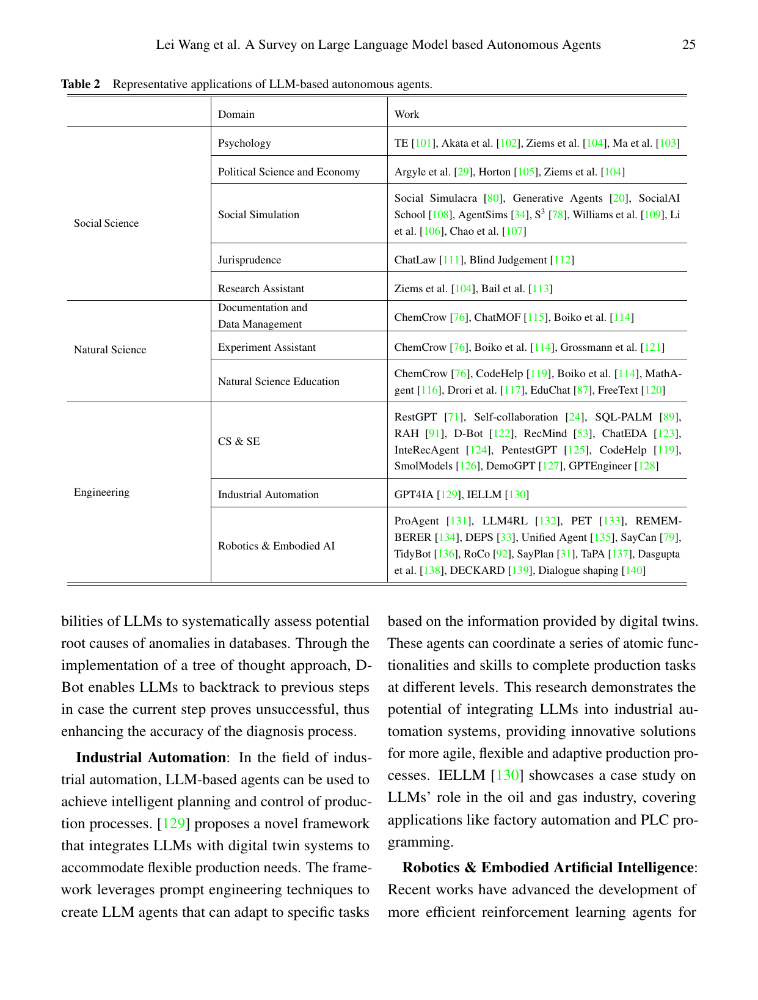
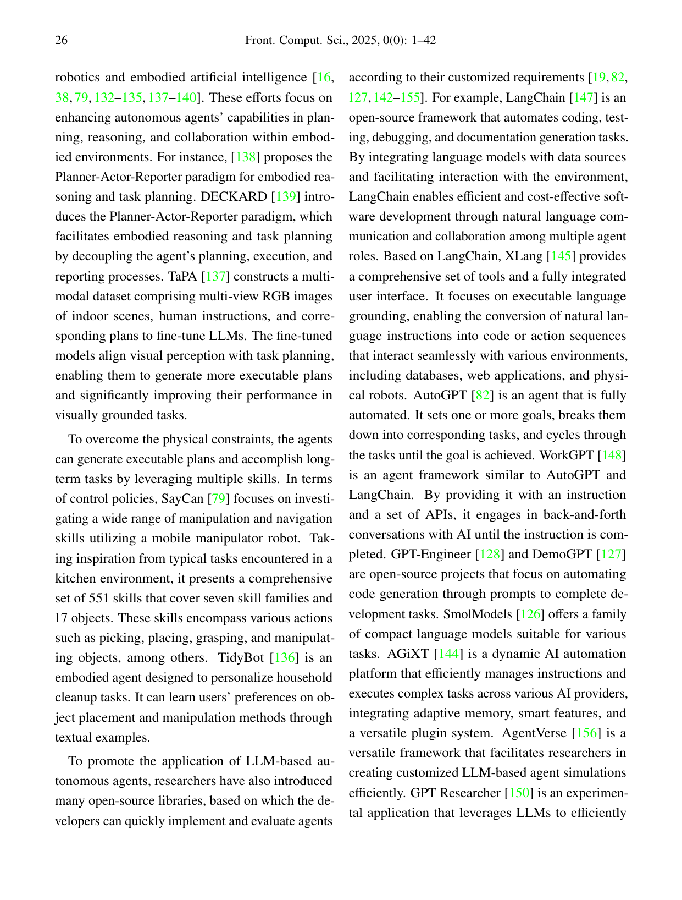
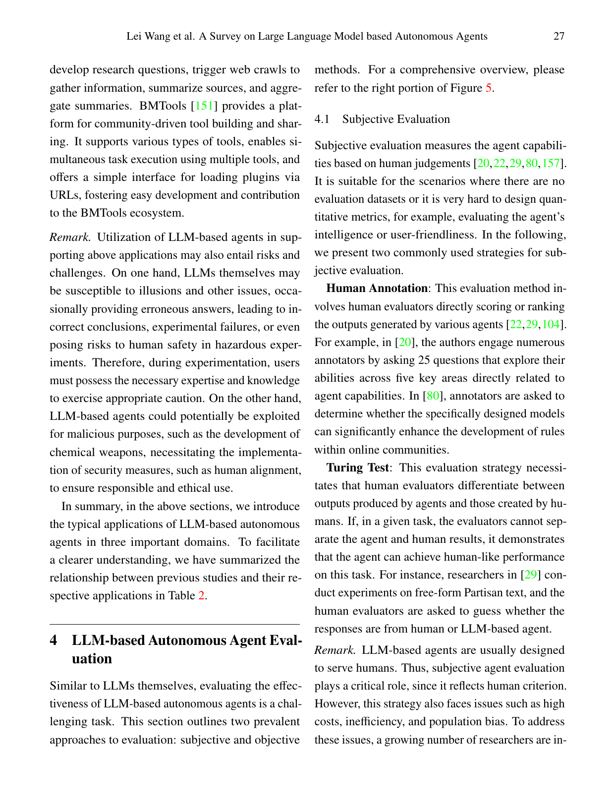
4 基于大型语言模型的自主智能体评估
与大型语言模型本身类似，评估基于大型语言模型的自主智能体的有效性也是一项挑战。本节介绍两种常见方法：主观评估和客观评估。
4.1 主观评估
主观评估依据人类判断衡量智能体能力 [20, 22, 29, 80, 157]。当不存在评测数据集，或很难设计定量指标时，这种方法尤其适用，例如评估智能体的智能程度或用户友好性。
人工标注。 由人工评价者直接给不同智能体生成的输出打分或排序 [22, 29, 104]。例如，生成式智能体的研究邀请许多标注者回答 25 个问题，从五个与智能体能力直接相关的方面考察其表现；Social Simulacra 则让标注者判断特定模型是否能显著促进在线社区规则形成。
图灵测试。 人类评价者需要区分输出来自智能体还是来自人类。如果评价者无法在某个任务中区分二者，就说明智能体在该任务上能够达到类似人类的表现。例如，[29] 在自由形式的党派文本上进行实验，让人类猜测回答来自人类还是基于大型语言模型的智能体。
基于大型语言模型的智能体通常服务于人类，因此主观评估十分重要，它能够反映人类使用标准。但这种方法也存在成本高、效率低和人群偏差等问题。为此，越来越多研究开始让大型语言模型充当主观评价的中介。ChemCrow 使用 GPT 评估实验结果，同时考察任务是否完成以及底层过程是否准确。ChatEval 则让多个智能体以结构化辩论方式批评和评估候选模型的结果。随着大型语言模型继续发展，这类自动化评价有望提高主观评估的可信度和适用范围。
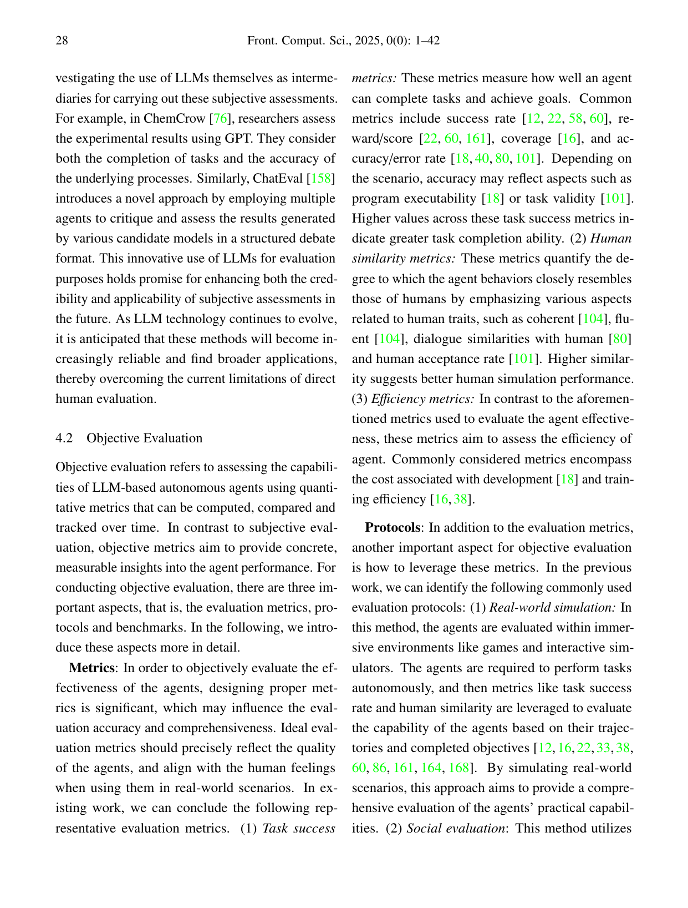
4.2 客观评估
客观评估使用可以计算、比较和随时间跟踪的定量指标衡量智能体能力。与主观评估不同，客观指标希望提供具体、可测量的性能信息。客观评估有三个重要方面：评估指标、评估协议和评测基准。
评估指标。 理想的指标应准确反映智能体质量，并与人类在真实场景中的感受一致。已有研究中常见三类指标：
- 任务成功指标。 衡量智能体完成任务和实现目标的能力，包括成功率 [12, 22, 58, 60]、奖励或得分 [22, 60, 161]、覆盖率 [16]、准确率或错误率 [18, 40, 80, 101]。具体场景中的准确率还可能表示程序可执行性或任务有效性。指标越高，通常表示任务完成能力越强。
- 人类相似度指标。 衡量智能体行为在多大程度上接近人类，关注连贯性、流畅性、与人类对话的相似度和人类接受率等特征 [80, 101, 104]。相似度越高，通常说明模拟人类能力越好。
- 效率指标。 衡量智能体效率，而不是单纯有效性，常见指标包括开发成本 [18] 和训练效率 [16, 38]。
评估协议。 常见协议包括：
- 真实世界模拟。 在游戏和交互式模拟器等沉浸式环境中评估智能体。智能体需要自主执行任务，再根据其轨迹和已经完成的目标，利用任务成功率、人类相似度等指标衡量能力 [12, 16, 22, 33, 38, 60, 86, 161, 164, 168]。通过模拟真实世界场景，这种方法希望全面评估智能体的实际能力。
- 社会评估。 根据智能体在模拟社会中的交互，用指标评估社会智能。常见方法包括：用协作任务评估团队合作能力，用辩论分析论证推理，以及用人类研究衡量社会能力 [34, 80, 101, 163]。这些方法分析连贯性、心智理论和社会智商等特征，评估智能体在合作、交流、同理心及模仿人类社会行为方面的能力。把智能体置于复杂交互环境中，可以了解其更高层次的社会认知。
- 多任务评估。 使用来自不同领域的一组多样化任务评估智能体，能够有效衡量智能体在开放领域环境中的泛化能力 [12, 29, 86, 151, 162–164, 169, 170]。
- 软件测试。 让智能体生成测试用例、复现缺陷、调试代码，并与开发者及外部工具交互 [159, 160, 167]；随后使用测试覆盖率、缺陷发现率等指标衡量基于大型语言模型的智能体的有效性。
评测基准。 确定指标和协议之后，选择合适的基准也是评估的关键。研究者已经提出多种基准，用于衡量不同领域和场景中的智能体能力。许多研究使用 ALFWorld [60]、IGLU [161] 和 Minecraft [16, 33, 38] 等环境，在交互式、任务导向的模拟中评估智能体。Tachikuma [168] 通过桌面角色扮演游戏日志，评估大型语言模型推断和理解多个角色与新物体之间复杂交互的能力。
AgentBench [169] 提供在多样化环境中评估大型语言模型作为自主智能体的综合框架，是首次面向多个领域的真实世界挑战，对大型语言模型智能体开展系统评估。SocKET [163] 是评估大型语言模型社会能力的综合基准，包含 58 项任务，覆盖幽默和讽刺、情绪与感受、可信度等五类社会信息。AgentSims [34] 是通用智能体评估框架，可以灵活设计规划、记忆和行动策略，并在交互环境中衡量不同模块的效果。
ToolBench [151] 专门评估并增强语言模型的工具使用能力，包含 16,464 个真实世界 RESTful API，以及为单工具和多工具场景设计的多样指令。WebShop [86] 使用 118 万件真实商品，评估产品搜索和检索能力。Mobile-Env [164] 是可扩展的交互平台，用于评估智能体的多步交互能力。WebArena [173] 提供覆盖多个领域的完整网站环境，以端到端方式评估智能体，并判断已完成任务的准确性。GentBench [171] 在智能体利用工具完成复杂任务时，评估其推理、安全和效率等能力。
RocoBench [92] 包含六项任务，在多种场景中评估多智能体协作，强调通信和协调策略，从而衡量合作机器人中的适应性与泛化能力。EmotionBench [172] 评估大型语言模型的情绪评价能力，即面对特定情境时“感受”如何变化。它收集 400 多种能够诱发八类负面情绪的情境，并使用自我报告量表衡量大型语言模型和人类被试的情绪状态。PEB [125] 面向渗透测试场景，包含主流平台上的 13 个不同目标，以多个难度等级提供结构化评估，反映智能体在现实世界中面对的挑战。ClemBench [165] 包含五种对话游戏，评估大型语言模型作为玩家的能力。E2E [174] 是测试聊天机器人准确性和实用性的端到端基准。
客观评估可以用多种指标对智能体能力进行定量分析。当前方法还无法完美测量所有类型的能力，但客观评估能够提供与主观评估互补的重要信息。继续推进客观评估的基准和方法，将进一步促进自主智能体的发展与理解。
本节介绍了主观和客观两类评估策略。评估在自主智能体领域发挥重要作用，但主观与客观方法各有优缺点，实践中可能需要把二者结合起来，才能全面评估智能体。表 3 总结了既有工作与这些评估策略之间的对应关系。
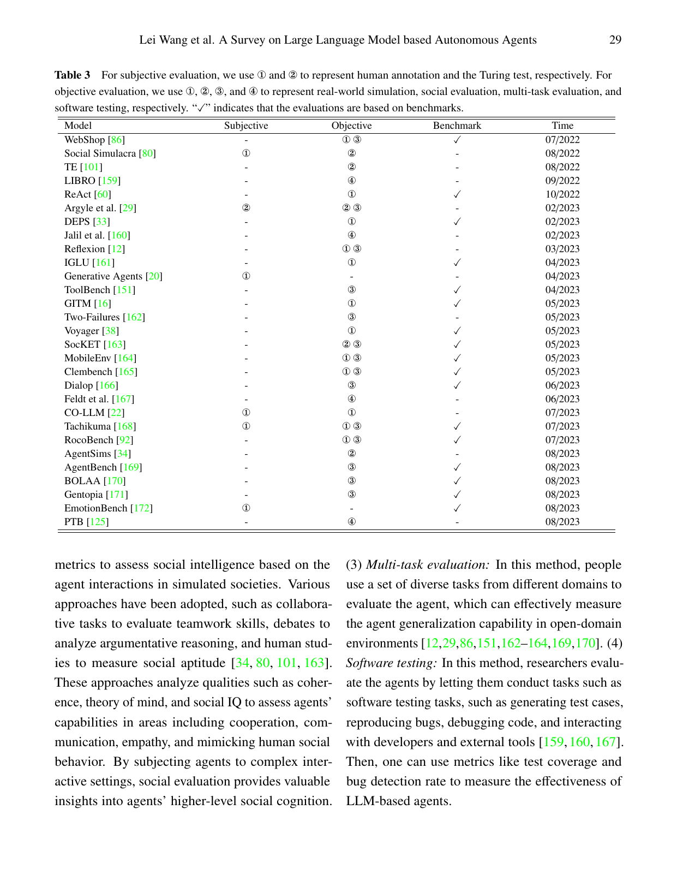
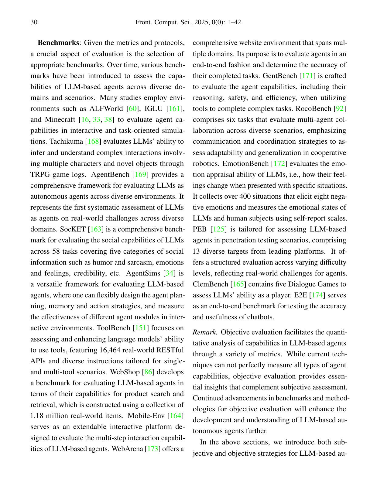
5 相关综述
随着大型语言模型快速发展，已经出现许多全面综述，从不同角度介绍背景、主要发现和主流技术。[175] 广泛介绍大型语言模型的大量既有工作；[176] 主要关注大型语言模型在下游任务中的应用及部署挑战；[177] 汇总人类对齐技术，包括数据收集和模型训练方法；[178] 讨论大型语言模型的推理能力、改进方法及评估；[179] 介绍增强语言模型，即具备推理和工具使用能力的语言模型；[180] 讨论应评估什么、在哪里评估，以及如何评估大型语言模型在下游任务和社会影响方面的表现；[181] 也分析大型语言模型在各种下游任务中的能力与局限。
上述研究覆盖大型模型的训练、应用和评估，但在本文之前，还没有工作专门聚焦于快速出现且极具潜力的基于大型语言模型的智能体领域。本文整理了 100 项与大型语言模型智能体相关的工作，覆盖智能体构建、应用和评估过程。
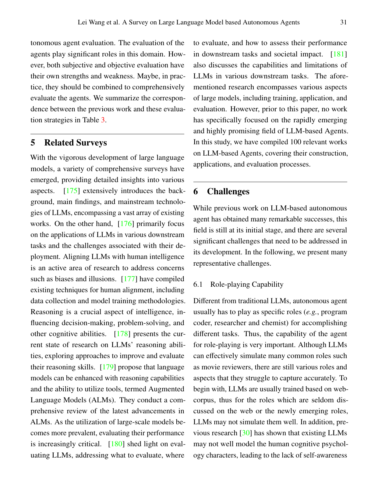
6 挑战
尽管已有工作取得了许多显著成果，基于大型语言模型的自主智能体仍处于早期阶段，发展过程中还需要解决多项重要挑战。
6.1 角色扮演能力
与传统大型语言模型不同，自主智能体通常需要扮演程序员、研究者和化学家等特定角色来完成不同任务，因此角色扮演能力十分重要。虽然大型语言模型可以有效模拟电影评论家等常见角色，但仍难以准确捕捉许多角色及其细节。大型语言模型通常根据网络语料训练，对于网络上很少讨论的角色或新出现的角色，可能无法很好地模拟。此外，已有研究 [30] 表明，现有大型语言模型可能无法充分建模人类认知心理特征，导致其在对话中缺乏自我意识。
潜在解决方案包括微调大型语言模型，或仔细设计智能体提示词和架构 [182]。例如，可以先收集罕见角色或心理特征的真实人类数据，再用于微调大型语言模型。但如何确保微调后的模型仍能很好地完成常见角色任务，是进一步的挑战。除微调外，也可以设计定制化提示词和架构增强角色扮演能力；然而，提示词和架构的设计空间非常大，寻找最优方案并不容易。
6.2 广义人类对齐
传统大型语言模型的人类对齐已经得到大量讨论。对于基于大型语言模型的自主智能体，尤其是用于模拟的智能体，这个概念需要更深入地分析。传统模型通常被微调为符合正确的人类价值，例如不应计划制造炸弹报复社会。但如果智能体用于真实世界模拟，理想模拟器应该诚实呈现多样化的人类特征，包括价值观不正确的特征。模拟人的负面方面甚至更重要，因为模拟的目标之一是发现和解决问题；如果没有负面方面，就没有需要解决的问题。例如，要模拟真实社会，可能必须允许智能体计划制造炸弹，再观察它如何实施计划以及行为会产生什么影响，从而帮助人类采取更好的行动阻止现实社会中的类似行为。
因此，基于智能体的社会模拟面临一个重要问题：如何实现广义人类对齐，使智能体针对不同目的和应用，能够与多样化的人类价值观对齐。然而，ChatGPT 和 GPT-4 等强大模型大多已经与统一的人类价值观对齐。一个有趣方向，是通过设计合适的提示策略“重新对齐”这些模型，使它们在模拟时展现目标人群的价值观。
6.3 提示词鲁棒性
为了保证智能体行为合理，设计者通常把记忆、规划等辅助模块嵌入大型语言模型。但增加这些模块后，需要更复杂的提示词来保证一致运行和有效通信。已有研究 [183, 184] 指出，大型语言模型提示词缺乏鲁棒性，即使很小的文字变化，也可能产生显著不同的结果。在自主智能体中，这个问题更加严重，因为系统不是单一提示词，而是包含所有模块的提示词框架，一个模块的提示词可能影响其他模块。此外，不同大型语言模型的提示词框架也可能差异很大。如何构建适用于不同模型的统一、稳健提示框架，仍是尚未解决的关键问题。
潜在方案有两种：一是通过试错手动构建关键提示元素，二是使用 GPT 自动生成提示词。
6.4 幻觉
幻觉是大型语言模型的根本挑战之一，表现为模型以很高置信度生成错误信息。这个问题同样严重影响自主智能体。例如，[185] 观察到，代码生成任务中即使面对简单指令，智能体也可能出现幻觉行为，生成错误或误导性代码，带来安全风险和伦理问题。把人类纠正反馈直接纳入人类—智能体交互的迭代过程，是一种可行的缓解方法。大型语言模型综述 [175] 对幻觉问题还有更多讨论。
6.5 知识边界
基于大型语言模型的自主智能体的一项重要应用，是模拟多样化的真实人类行为 [20]。人类模拟研究有很长历史，而大型语言模型在模拟人类行为方面能力显著，是近期兴趣增长的原因之一。不过，大型语言模型的强大能力并不总是优势。理想模拟应准确复现人类知识，而大型语言模型在海量网络语料上训练，掌握的知识远超普通个体，因此可能拥有压倒性的能力。
例如，要模拟用户对不同电影的选择，必须确保大型语言模型假定自己事先不知道这些电影。但模型可能已经在训练中获取了相关信息。如果不采取适当策略，模型可能根据过多知识作出决策，而真实用户并没有机会接触这些电影的内容。由此可见，构建可信的智能体模拟环境，需要限制大型语言模型使用用户未知的知识。
6.6 效率
由于采用自回归架构，大型语言模型通常推理速度较慢。然而，智能体在每次行动中可能需要多次查询大型语言模型，例如从记忆提取信息、行动前制定计划等。因此，智能体行动效率会受到大型语言模型推理速度的显著影响。如何通过更快模型、缓存、批处理、并行规划和更少的查询次数提升端到端效率，是实际部署必须解决的问题。
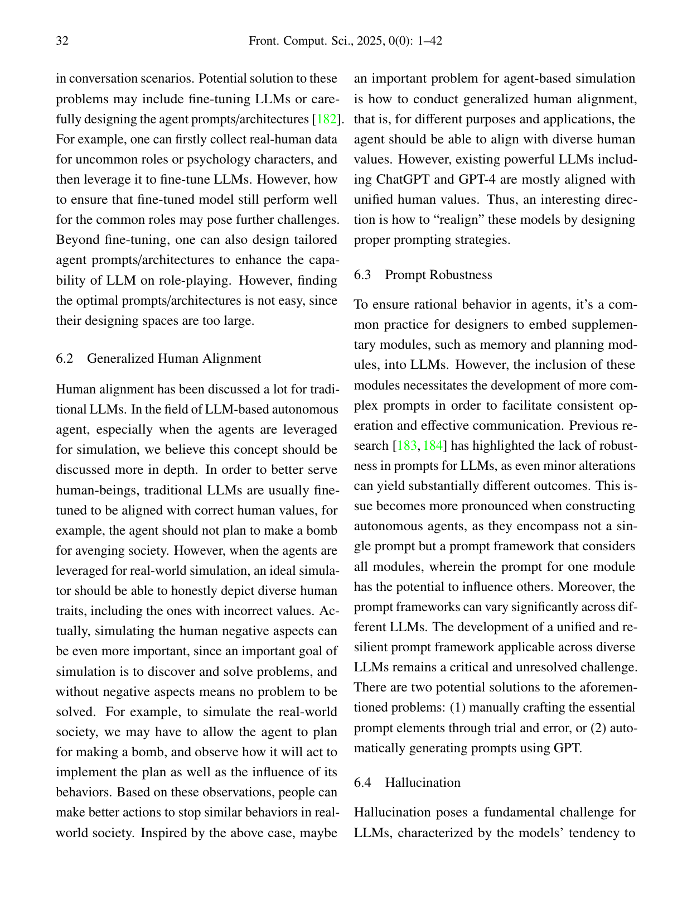
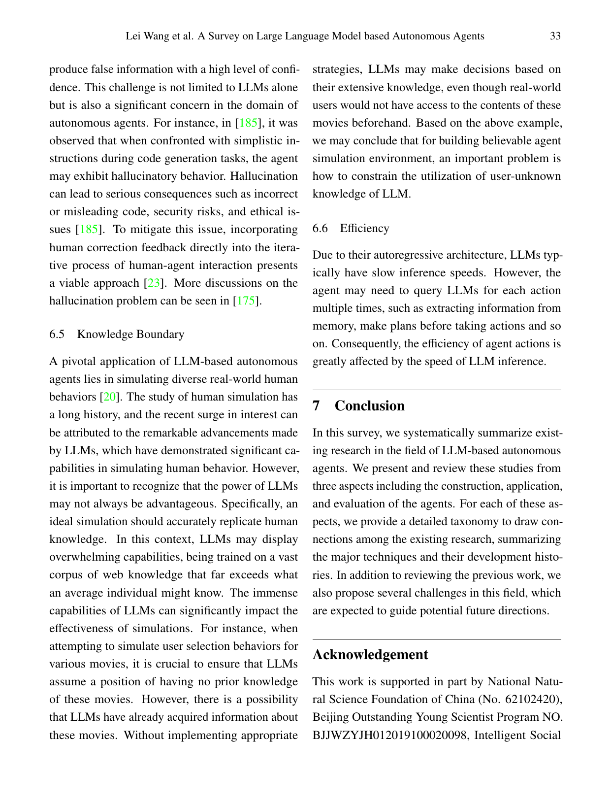
7 结论
本文系统总结了基于大型语言模型的自主智能体领域的既有研究，从智能体构建、应用和评估三个方面进行了介绍和回顾。针对每个方面，本文提供了详细分类体系，把不同研究联系起来，并总结主要技术及其发展历史。除回顾已有工作外，本文还提出了该领域面临的若干挑战，希望为未来研究提供方向。
致谢
本工作得到国家自然科学基金（62102420）、北京市杰出青年科学家项目（BJJWZYJH012019100020098）、中国人民大学“基础学科拔尖学生培养计划”重大创新与规划交叉平台、公共计算云、中国人民大学建设世界一流大学（学科）专项资金以及智能社会治理平台支持。
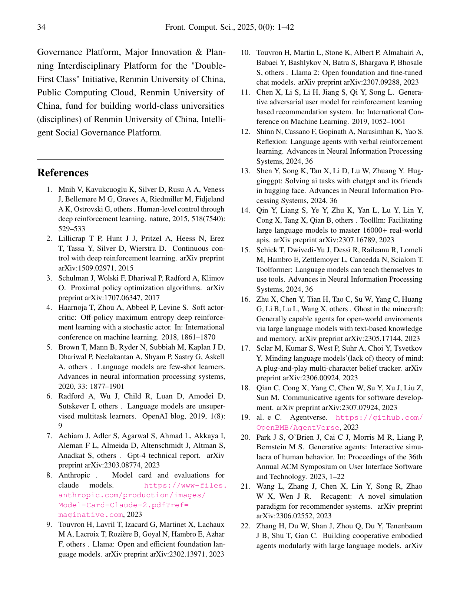
参考文献
原论文参考文献共 181 项，包含强化学习、语言模型、智能体架构、工具使用、社会模拟、机器人、评测基准等方向。为避免改变作者、期刊、会议、年份和页码等书目信息，参考文献按原论文页序保留截图；正文引用编号与原文一致。
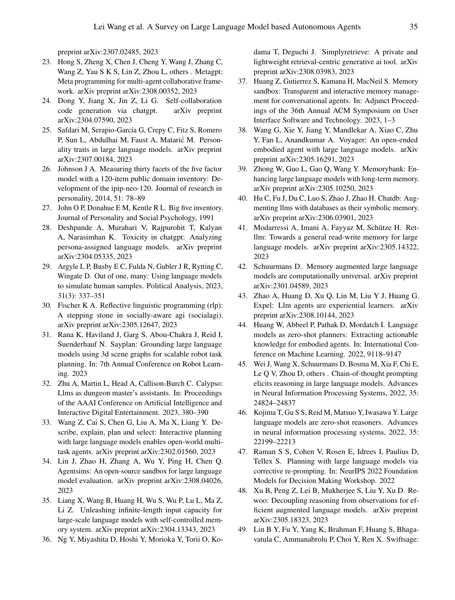
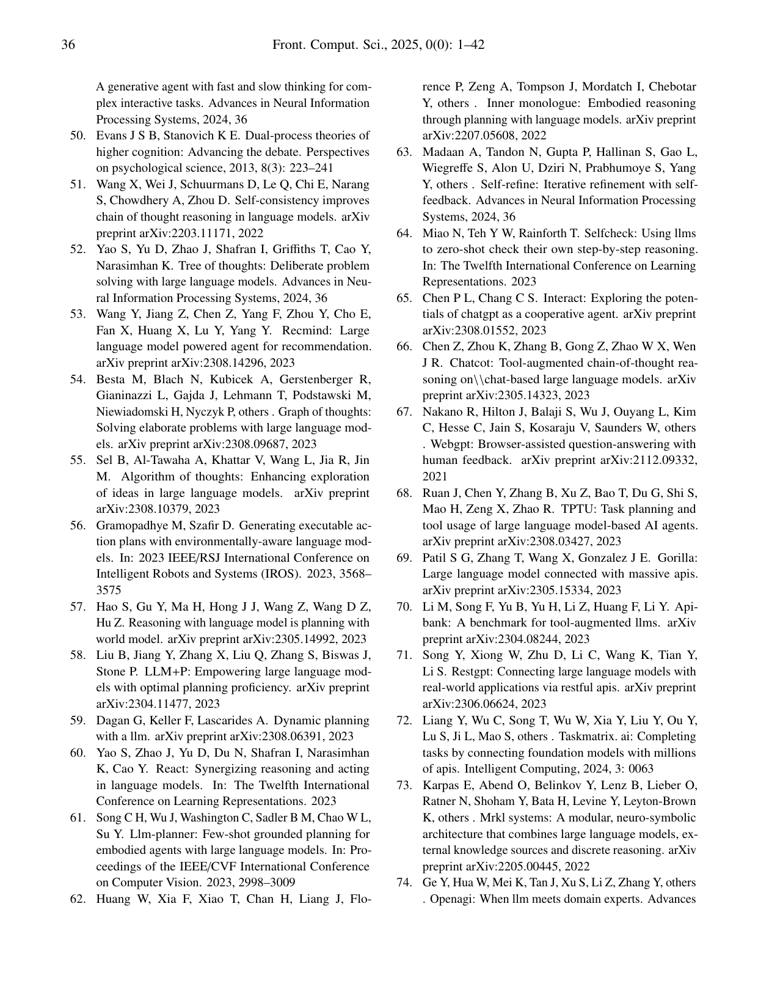
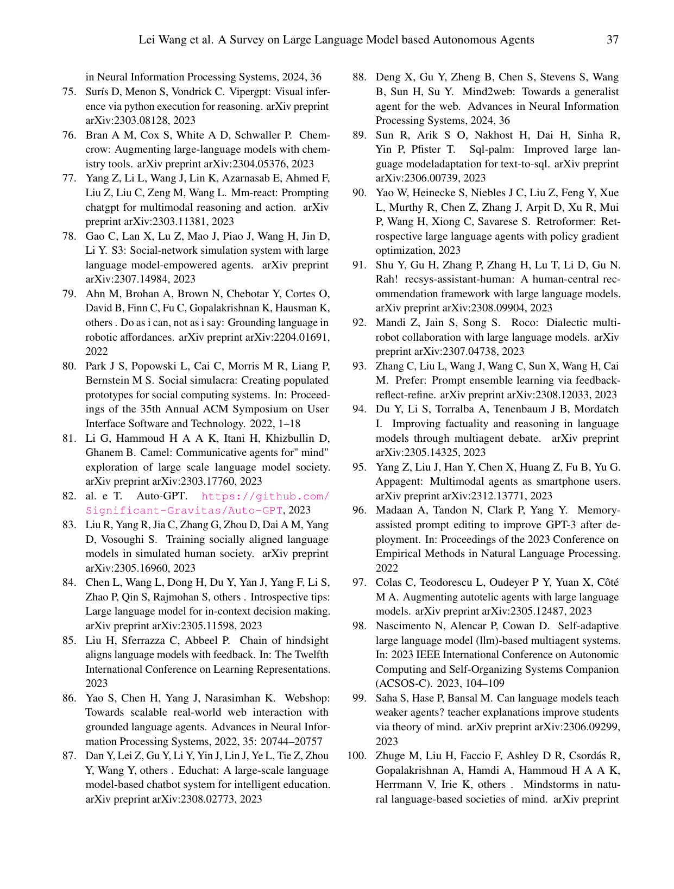
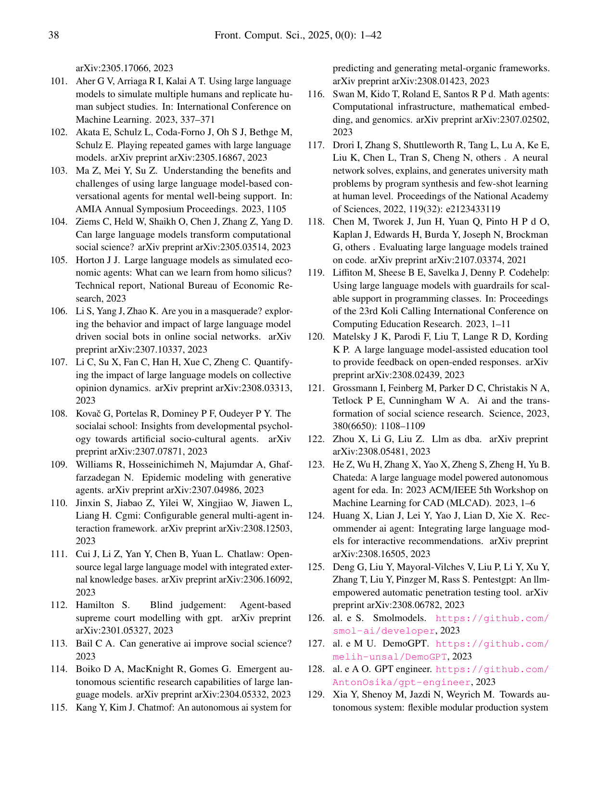
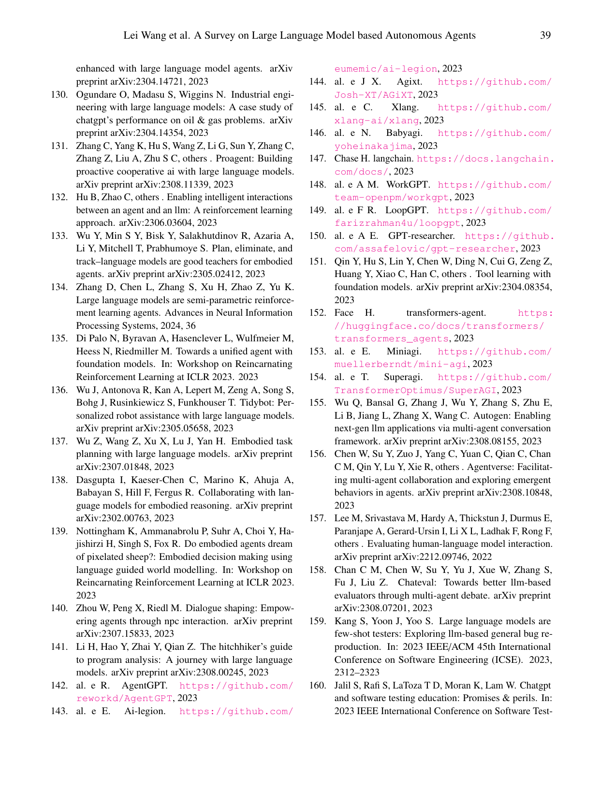
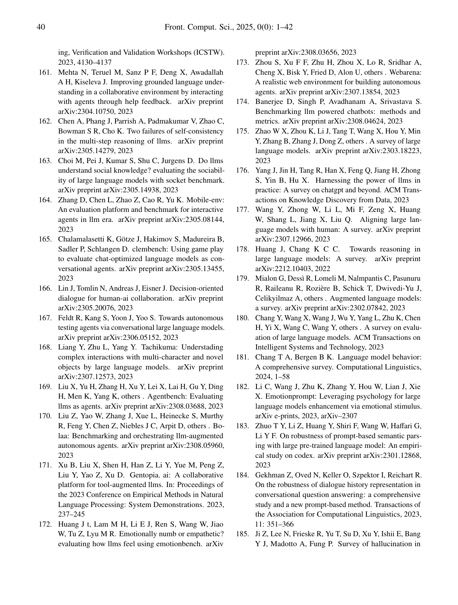
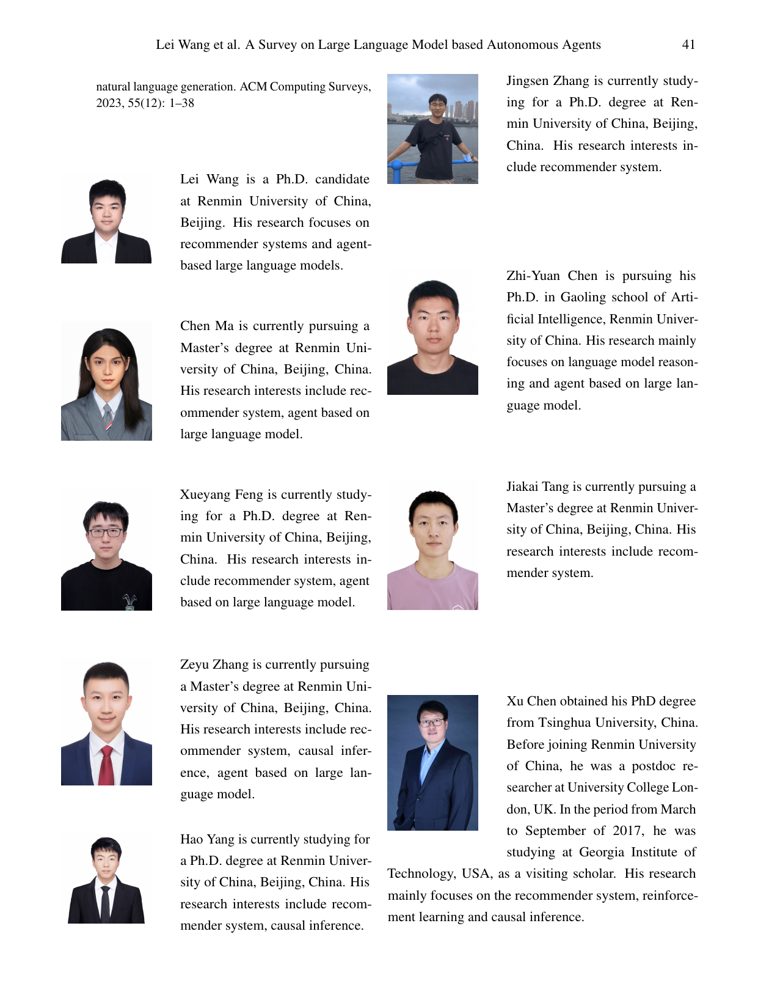
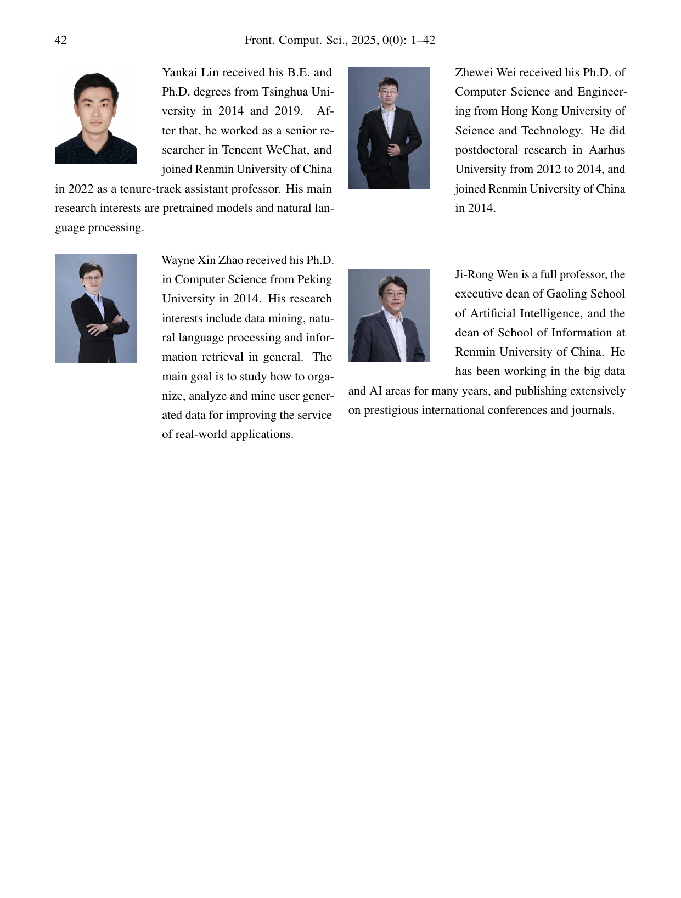